English · Bahasa Melayu · Laman utama
 Panduan pengguna LekasPOS
Panduan pengguna LekasPOS
Untuk LekasPOS 1.13.0 · Kemas kini terakhir 8 Oktober 2026
LekasPOS ialah aplikasi jualan (POS) percuma untuk kedai runcit kecil dan pasar mini. Ia berjalan pada telefon atau tablet Android dan berfungsi sepenuhnya tanpa internet. Panduan ini menerangkan semua yang boleh dilakukannya, untuk pemilik, pengurus dan juruwang. Pengguna baharu? Baca Bermula; juruwang boleh mula dengan Panduan ringkas untuk juruwang. Perkataan dalam huruf tebal ialah perkataan yang anda lihat dalam aplikasi.
1. Bermula
Apa yang anda perlukan
- Telefon atau tablet Android, Android 5.0 atau lebih baharu. Telefon lama dengan memori 1–2 GB pun sudah cukup. Pada tablet, atau telefon yang dipegang secara melintang, senarai barang dan bil dipaparkan bersebelahan.
- Tidak perlu internet untuk menjual. Internet hanya digunakan untuk sandaran Google Drive, laporan jualan harian, kemas kini aplikasi dan laporan ralat (jika anda membenarkannya).
- Tidak perlu akaun. Akaun Google hanya digunakan jika anda menghidupkan sandaran Google Drive atau laporan jualan harian.
- Perkakasan pilihan (lihat Perkakasan): pencetak resit Bluetooth (58 atau 80 mm), laci wang yang disambung ke pencetak, pengimbas kod bar (USB atau Bluetooth), penimbang yang mencetak label kod bar, dan TV atau monitor sebagai skrin pelanggan.
Pasang dan kemas kini
- Pada telefon atau tablet, buka faizoken.github.io/LekasPOS dan ketik Download LekasPOS.
- Buka fail
LekasPOS.apkyang dimuat turun. Pada Android 8 dan lebih baharu, benarkan pelayar anda memasang aplikasi tidak diketahui jika Android bertanya. Pada Android 5–7, hidupkan dahulu Tetapan → Keselamatan → Sumber tidak diketahui. - Jika Play Protect memberi amaran tentang aplikasi yang tidak dikenali, ketik Butiran lanjut → Pasang juga. Ini biasa bagi aplikasi yang tidak dipasang dari Google Play.
Selepas itu aplikasi mengemas kini dirinya sendiri: apabila versi baharu keluar, butang Kemas kini muncul di bahagian atas skrin jualan untuk pemilik — lihat Kemas kini aplikasi. Produk, jualan dan tetapan anda sentiasa kekal.
Skrin selamat datang (kali pertama)
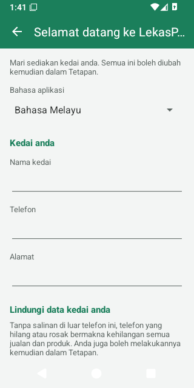
Kali pertama LekasPOS dibuka pada telefon baharu, ia memaparkan Selamat datang ke LekasPOS. Semua pilihan di skrin ini boleh diubah kemudian dalam Tetapan.
- Bahasa aplikasi: Bahasa telefon, English atau Bahasa Melayu.
- Kedai anda: Nama kedai (wajib), Telefon dan Alamat. Semuanya dicetak di bahagian atas resit.
- Lindungi data kedai anda: Sandaran ke Google Drive (disyorkan) atau Salinan harian ke kad SD atau USB. Sila pilih salah satu — lihat Menjaga keselamatan data anda.
- Pilihan: Sediakan pencetak resit dan Kakitangan dan PIN.
- Sudah menggunakan LekasPOS di kaunter lain di kedai ini, atau menggantikan telefon yang hilang? Ketik Pulihkan atau sertai kedai saya dari Google Drive dan hidupkan sandaran Google Drive dengan akaun Google kedai: semuanya akan kembali. Ada fail sandaran, atau salinan pada kad SD atau pemacu USB? Taip nama kedai, ketik Mula menjual, kemudian lihat Memulihkan sandaran.
- Ketik Mula menjual.
Menyediakan kedai baharu — senarai semak
- Lindungi data: sandaran Google Drive, atau salinan harian ke kad SD / pemacu USB (caranya).
- Butiran kedai untuk resit: Tetapan → Kedai & resit (nombor pendaftaran, teks resit, logo) — butiran.
- Pencetak dan laci wang: pasangkan pencetak dalam tetapan Bluetooth Android, kemudian Tetapan → Pencetak & laci wang → Pilih pencetak yang telah dipasangkan → Cetak halaman ujian (butiran).
- Produk: imbas setiap produk di kaunter dan tambahkannya, atau masukkan dalam Produk, atau import hamparan (butiran). Tambah kategori, warna dan gambar supaya senarai barang mudah digunakan.
- Kaedah bayaran yang anda terima, seperti DuitNow atau Touch ’n Go (butiran).
- Kakitangan: tetapkan PIN pemilik dahulu dan catat kod pemulihan, kemudian tambah juruwang anda (butiran).
- Jika ada pekerja, gunakan syif supaya setiap orang mengira laci wang (butiran).
- Buat satu jualan percubaan, semak resitnya, kemudian batalkan jualan itu supaya ia tidak dikira dalam laporan.
Siapa boleh buat apa
Selagi pemilik belum menetapkan PIN, semua orang yang menggunakan aplikasi dikira sebagai pemilik dan boleh melakukan semuanya. Kedai yang dijalankan seorang diri boleh terus begitu. Setelah PIN ditetapkan, setiap orang log masuk dan hanya melihat butang yang dibenarkan oleh peranan mereka: Pemilik (semuanya), Pengurus (hampir semuanya kecuali tetapan dan kakitangan) dan Juruwang (menjual). Apabila juruwang memerlukan sesuatu yang lebih, pengurus menaip PIN mereka. Lihat Kakitangan, PIN dan peranan.
2. Panduan ringkas untuk juruwang
Semua yang juruwang perlu tahu, dalam satu halaman.
| Untuk… | Lakukan ini |
|---|---|
| Log masuk | Ketik nama anda, taip PIN anda, ketik OK. Bukan nama anda? Ketik Bukan anda? |
| Mula hari | Jika kaunter meminta Mulakan syif, kira wang tunai dalam laci dan ketik OK. |
| Tambah barang | Imbas kod barnya. Atau taip namanya di Cari dan ketik barang itu. Atau ketik Barang dan ketik barang itu. |
| Barang tanpa kod bar (sayur, kuih) | Ketik Barang (atau cari), ketik barang itu, kemudian taip berat atau harga jika diminta. |
| Kod bar tidak dijumpai | Kaunter memaparkan Kod bar tidak dijumpai. Panggil pengurus: pengurus ketik Tambah produk, taip PINnya, nama dan harga. |
| Tukar kuantiti | Ketik baris itu, kemudian + atau −, atau ketik nombornya dan taip kuantiti. |
| Buang satu barang | Ketik baris itu, kemudian Buang. |
| Buang seluruh bil | Menu → Kosongkan bil. |
| Pelanggan terlupa sesuatu | Tangguh bil itu (taip nama jika mahu), layan pelanggan seterusnya, kemudian ketik butang 1 ditangguh di bahagian atas untuk membukanya semula. |
| Terima tunai | Bayar → ketik wang kertas yang diberi pelanggan (cth. RM50). Amaun lain: Jumlah lain, taip amaunnya (5 0 0 0 = RM50.00), Selesai. |
| Kad, e-dompet, QR | Terima bayaran di terminal atau QR anda dahulu, kemudian Bayar → ketik Kad atau E-dompet / QR. |
| Sebahagian tunai, sebahagian kad | Bayar → Pecah bayaran → taip bahagian pertama → ketik kaedahnya → bayar selebihnya. |
| Beri baki | Amaun Baki yang besar ialah wang yang perlu dipulangkan. Imbas barang pertama pelanggan seterusnya untuk mula semula. |
| Pelanggan tanya baki sekali lagi | Bil kosong menunjukkan Jualan terakhir bersama bakinya. |
| Cetak resit sekali lagi | Cetak salinan di bawah jualan terakhir, atau Menu → Resit. |
| Semak harga tanpa menjual | Semak harga → imbas atau taip. |
| Diskaun atau harga baharu | Minta bantuan pengurus: Menu → PIN pengurus, kemudian Menu → Diskaun. |
| Tinggalkan kaunter | Ketik nama anda di bahagian atas → Kunci / tukar pengguna (atau Menu → Kunci / tukar pengguna). |
| Akhir hari | Menu → Tutup syif → kira semua wang tunai → nyatakan berapa yang ditinggalkan dalam laci → keluarkan selebihnya untuk pemilik. |
Semua yang anda buang daripada bil dicatat dalam log aktiviti, terutamanya selepas pelanggan melihat jumlahnya. Itu perkara biasa — barang yang salah dibuang setiap hari — dan ia melindungi anda sama seperti ia melindungi kedai.
3. Skrin jualan
Skrin jualan terbuka apabila anda memulakan aplikasi. Semua urusan dengan seorang pelanggan berlaku di sini.
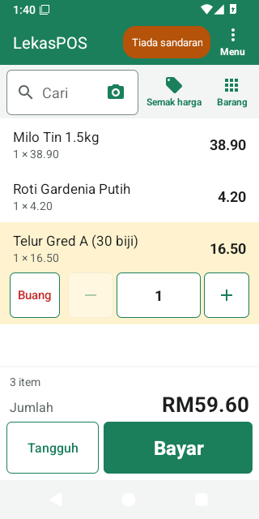
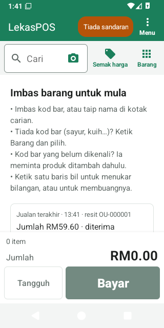
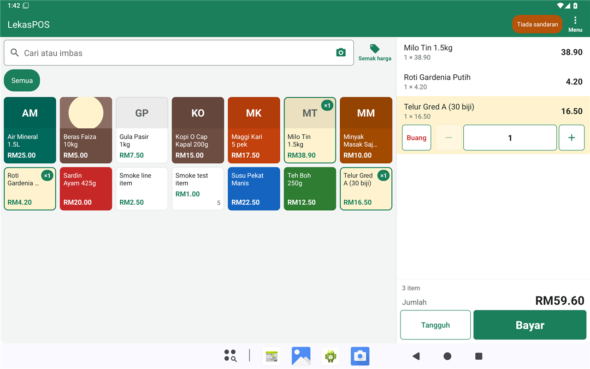
Apa yang ada di skrin
- Bar atas: nama kedai, nama anda (apabila PIN digunakan), butang kecil berwarna (“pil”) apabila ada sesuatu yang perlu diberi perhatian, dan Menu.
- Kotak Cari dengan butang kamera di dalamnya, Semak harga, dan pada telefon, Barang (membuka senarai barang; ketik sekali lagi atau tekan Kembali untuk melihat bil).
- Bil: satu baris bagi setiap barang, dengan kuantiti, harga dan amaunnya.
- Bahagian jumlah: bilangan barang (serta diskaun dan cukai, jika ada), Jumlah yang besar, dan butang Tangguh dan Bayar. Pemilik, pengurus dan juruwang semuanya melihat skrin yang sama.
Pil di bar atas
Pil hanya muncul apabila ada sesuatu untuk dilihat. Ketik pil untuk mengetahui maksudnya.
| Pil | Maksud |
|---|---|
| 2 ditangguh | Bil yang ditangguh. Ketik untuk membuka semula salah satunya. |
| Tiada sandaran | Data kedai belum disalin keluar dari telefon ini selama 3 hari (atau sandaran Google Drive tidak berjaya selama sehari). Lihat Menjaga keselamatan data anda. |
| Sandaran: log masuk | Google mahu akaun kedai log masuk semula untuk sandaran Google Drive. |
| Masalah data | Semakan harian menemui kerosakan dalam pangkalan data. Lihat Masalah data. |
| Storan hampir penuh | Telefon hampir penuh. Jualan tidak boleh disimpan pada telefon yang penuh: padam foto, video atau aplikasi. |
| Mencetak… | Resit sedang dicetak. |
| 3 untuk dicetak | 3 resit sedang menunggu untuk dicetak. |
| Pencetak luar talian (3) | Pencetak tidak dapat dihubungi dan 3 resit sedang menunggu. Ketik mana-mana pil pencetak untuk membuka tetapan pencetak. |
| Pengurus: Aminah ✕ | Seorang pengurus sedang membantu dengan bil ini. Ketik untuk menamatkan bantuan itu. |
| Kemas kini 1.14.0 | Versi baharu LekasPOS sudah sedia (pemilik sahaja). |
Juruwang yang mengetik pil tentang data akan melihat “Sila beritahu pemilik kedai…”: pemilik membetulkannya dalam Menu → Urus kedai → Tetapan.
Menambah barang
- Pengimbas kod bar
- Imbas sahaja — tiada apa-apa perlu diketik dahulu. Pengimbas USB dan Bluetooth dalam mod “papan kekunci” berfungsi tanpa sebarang tetapan. Anda mendengar bunyi bip pendek apabila barang ditambah dan nada rendah apabila ada masalah.
- Kamera
- Ketik kamera di dalam kotak carian. Letakkan setiap kod bar di dalam bingkai: setiap barang ditambah dengan bunyi bip (Ditambah: …). Barang yang memerlukan berat atau harga, atau kod bar yang belum dikenali kaunter, akan menutup kamera dan kaunter bertanya kepada anda. Lampu suluh menghidupkan lampu. Tekan Kembali apabila selesai.
- Cari
- Taip sebahagian nama (milo 1k menjumpai “Milo 1kg”), atau digit pertama kod bar. Ketik barang itu. Menaip kod bar atau SKU yang penuh dan menekan Enter terus menambahnya.
- Barang (senarai barang)
- Pada telefon, ketik Barang; pada tablet, senarai ini sentiasa di sebelah kiri. Tabnya ialah Laris (barang paling laku anda dalam 30 hari lepas), Semua, dan satu tab bagi setiap kategori. Ketik petak barang untuk menambahnya. Petak yang sudah ada dalam bil menunjukkan ×2. Petak menunjukkan harga dan, bagi produk yang stoknya dikira, bilangan yang ada dalam stok.
Barang ditimbang, barang yang harganya dimasukkan di kaunter, pek dan label penimbang
- Barang ditimbang (dijual mengikut berat): selepas imbas atau ketik, taip beratnya. Pad kekunci diisi dari
kanan:
1 2 5 0= 1.250 kg. Setiap timbangan menjadi baris tersendiri. - Barang yang harganya dimasukkan di kaunter: petaknya menunjukkan Masukkan harga; taip harganya (
1 5 0= RM1.50). - Produk yang dijual mengikut unit dengan harga 0.00 meminta harga, supaya ia tidak terjual percuma secara tidak sengaja. Produk yang ditimbang mesti ada harga sekilogram: pada harga 0.00 ia dijual percuma.
- Kod bar karton atau pek menambah satu baris seperti “Milo x24” pada harga pek.
- Label penimbang menambah barang yang ditimbang bersama beratnya, atau tepat dengan harga yang dicetak pada label (“harga label”). Lihat Label penimbang.
Kod bar yang belum dikenali kaunter
Kaunter berbunyi bip rendah dan memaparkan Kod bar tidak dijumpai. Ketik Tambah produk, taip nama dan harga, kemudian simpan: produk itu disimpan untuk lain kali dan masuk ke bil ini. Juruwang yang tidak dibenarkan menambah produk akan diminta PIN pengurus dahulu; pengurus kemudian menambahnya. Ketik Batal untuk tidak memasukkannya.
Hanya produk dalam senarai boleh dijual. Untuk barang tanpa kod bar (sayur, kuih, beg plastik), tambah produk sekali sahaja — dijual mengikut Berat atau dengan Harga dimasukkan di kaunter — dan pilihnya dari Barang.
Mengubah bil
- Baris yang terakhir diimbas atau diketik diserlahkan bersama butangnya: Buang, −, kuantiti, +. Ketik baris lain untuk memindahkan butang itu ke baris tersebut; ketik sekali lagi untuk menyembunyikannya.
- + dan − mengubah kuantiti sebanyak satu. − berhenti pada 1: gunakan Buang untuk yang terakhir.
- Ketik kuantiti untuk menaipnya (bagi barang ditimbang, berat yang baharu).
- Mengimbas produk yang sama sekali lagi menambah 1 pada barisnya.
- Menu → Kosongkan bil membuang seluruh bil (ia bertanya dahulu). PIN tidak diperlukan.
- Bil anda selamat: jika telefon dimulakan semula, aplikasi tertutup atau bateri habis, bil masih ada apabila aplikasi dibuka semula.
Setiap barang yang dibuang dan setiap kuantiti yang dikurangkan dicatat dalam Log aktiviti bersama nilainya — dan ditanda khas jika ia berlaku selepas skrin bayaran menunjukkan jumlah kepada pelanggan.
Menangguh bil
- Ketik Tangguh. Taip nama jika mahu (cth. nama pelanggan) dan ketik OK. Skrin kini kosong untuk pelanggan seterusnya.
- Untuk membukanya semula, ketik pil 1 ditangguh (atau Menu → Bil ditangguh) dan ketik bil itu. Bil yang sedang ada di skrin akan ditangguh sebagai gantinya.
- Untuk memadam bil yang ditangguh: Padam bil… dalam senarai (atau tekan lama pada bil itu).
Bil ditangguh kekal di kaunter ini (ia tidak dikongsi dengan kaunter lain) dan tidak hilang walaupun telefon dimulakan semula.
Diskaun dan perubahan harga
Menu → Diskaun (dipaparkan kepada mereka yang dibenarkan memberi diskaun atau menukar harga):
- Diskaun untuk seluruh bil — sama ada Amaun atau Peratus.
- Diskaun untuk barang yang dipilih — ketik baris itu dahulu.
- Tukar harga barang yang dipilih.
- Tiada diskaun membuang diskaun.
Juruwang tanpa kebenaran ini tidak melihat Diskaun. Pengurus boleh membantu: Menu → PIN pengurus → pengurus menaip PIN mereka → Diskaun muncul untuk bil ini (sehingga bil dibayar, ditangguh atau dikosongkan, atau selama 5 minit). Diskaun dan perubahan harga dicatat dalam Log aktiviti bersama nama orang yang meluluskannya. Barang yang diberi diskaun atau harga secara manual tidak lagi termasuk dalam promosi.
Pelanggan pada bil
Apabila Pelanggan dan kredit dihidupkan (Tetapan → Kedai & resit), bahagian jumlah menunjukkan Tambah pelanggan. Ketik untuk memilih pelanggan (cari mengikut nama atau telefon) atau mencipta pelanggan baharu. Nama pelanggan dicetak pada resit dan bil boleh dibayar dengan Kredit pelanggan (“bayar kemudian”) — lihat Pelanggan dan kredit.
Semak harga
Ketik Semak harga, kemudian imbas atau taip kod bar atau nama dan ketik Semak. Ia menunjukkan harga, harga pek, stok dan sebarang promosi yang sedang berjalan, tanpa menyentuh bil. Kakitangan yang dibenarkan menyunting produk juga melihat Tukar harga: harga baharu digunakan mulai sekarang (barang yang sudah ada dalam bil kekal dengan harga lama) dan dicatat dalam Log aktiviti.
Menu
Menu hanya menunjukkan apa yang boleh dilakukan oleh orang yang sedang log masuk.
| Pilihan menu | Kegunaannya |
|---|---|
| Diskaun | Diskaun dan perubahan harga pada bil ini. |
| Kosongkan bil | Buang bil yang ada di skrin. |
| Bil ditangguh | Bil yang sedang ditangguh. |
| Jualan & bayaran balik (atau Resit) | Jualan lepas: salinan, bayaran balik, pembatalan — butiran. |
| Pelanggan | Apabila pelanggan dan kredit dihidupkan. |
| Buka syif / Tutup syif | Mula atau tamatkan syif anda — butiran. |
| Syif & tunai | Wang masuk, wang keluar, simpanan wang, laporan syif. |
| Buka laci wang | Membuka laci tanpa jualan (direkodkan). |
| Kunci / tukar pengguna | Kunci kaunter (apabila PIN digunakan). |
| PIN pengurus | Pengurus membantu dengan bil ini. |
| Urus kedai › | Produk, Kategori, Promosi, Inventori, Laporan, Tetapan, Kadar cukai, Diagnostik. |
4. Menerima bayaran
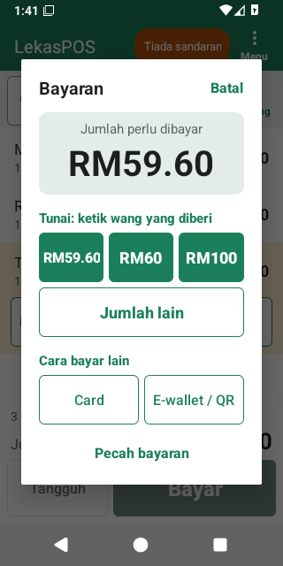
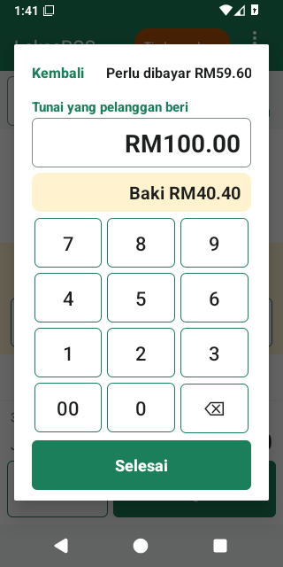
Ketik Bayar. Bil dibekukan selagi skrin bayaran terbuka. Bayaran ada dua langkah.
Tunai
- Di bawah Tunai: ketik wang yang diberi ada amaun tepat dan nilai wang kertas yang seterusnya (cth. RM59.60, RM60, RM100). Satu ketikan terus membayar bil dan menunjukkan baki.
- Amaun lain? Ketik Jumlah lain, taip amaunnya — pad kekunci diisi dari kanan, jadi
5 0 0 0ialah RM50.00 — dan Baki muncul semasa anda menaip. Ketik Selesai. Jika tiada apa-apa ditaip, Selesai mengambil amaun tepat. - Tunai dibundarkan kepada 5 sen yang terdekat (pembundaran Malaysia) apabila Bundarkan bayaran tunai kepada 5 sen dihidupkan: RM10.02 → RM10.00, RM10.03 → RM10.05. Skrin bayaran kemudian menunjukkan Tunai (dibundarkan), dan resit mencetak Pembundaran. Kad dan e-dompet sentiasa membayar amaun tepat.
- Menaip amaun yang kurang daripada bil sebagai bayaran pertama? Kaunter bertanya “Hanya RM… tunai? Maka RM… masih perlu dibayar dengan kaedah lain.” — ketik Bayaran sebahagian untuk meneruskan, atau Batal jika anda maksudkan amaun yang lebih besar.
Kad, e-dompet / QR dan kaedah lain
Di bawah Cara bayar lain ada satu butang bagi setiap kaedah bayaran (Kad, E-dompet / QR, dan sebarang kaedah yang anda tambah, seperti DuitNow). Satu ketikan membayar seluruh amaun dengan kaedah itu.
LekasPOS hanya merekod bayaran kad dan e-dompet — ia tidak berhubung dengan terminal kad atau bank. Terima bayaran dahulu dan pastikan ia berjaya, kemudian ketik kaedah itu.
Pecah bayaran
- Ketik Pecah bayaran.
- Taip amaun bahagian pertama (cth.
2 0 0 0untuk RM20.00) dan ketik kaedahnya (cth. Kad). Jika tiada apa-apa ditaip, kaedah itu membayar semua yang masih berbaki. - Skrin bayaran kini menunjukkan Baki perlu dibayar dan Sudah dibayar: Kad RM20.00. Bayar selebihnya dengan cara yang sama (cth. ketik nilai wang kertas).
Batal selepas sebahagian sudah dibayar akan bertanya sama ada mahu membatalkan bahagian itu; bil itu sendiri kekal. Bahagian kad atau QR yang benar-benar sudah dibayar pelanggan kemudian tidak lagi direkodkan: apabila anda menerima bayaran semula, ketik kaedah yang sama untuk amaun itu, atau pulangkan wang itu melalui terminal.
Kredit pelanggan (bayar kemudian)
Apabila ada pelanggan pada bil, Kredit pelanggan muncul antara kaedah bayaran. Amaun itu ditambah kepada hutang pelanggan. Jika melebihi had kredit pelanggan, kaunter bertanya Melebihi had kredit; Benarkan memerlukan pengurus. Lihat Pelanggan dan kredit.
Selepas jualan
- Hasilnya menunjukkan Baki dalam angka besar (atau Dibayar), Diterima … · jumlah … dan nombor Resit.
- Resit dicetak dengan sendirinya (jika pencetak sudah disediakan) dan laci wang terbuka untuk tunai.
- Cetak salinan (atau Cetak resit jika resit tidak dicetak secara automatik) dan Kongsi (sebagai gambar atau PDF, cth. melalui WhatsApp).
- Kakitangan yang mengurus stok juga melihat Hampir habis: … bagi barang dalam jualan ini yang stoknya pada atau di bawah paras amaran stok rendah.
- Jualan baru menutup hasil itu — atau imbas sahaja barang pertama pelanggan seterusnya.
- Jumlah sifar (cth. diskaun 100%) hanya menunjukkan Selesai jualan.
Jualan disimpan sepenuhnya sebelum apa-apa dicetak. Jika penyimpanan gagal (contohnya, telefon penuh), kaunter memaparkan Jualan tidak disimpan: jualan itu tidak direkodkan dan bil kekal. Jika pelanggan sudah membayar dengan kad atau QR, jangan caj mereka sekali lagi — betulkan masalahnya, ketik Bayar dan ketik kaedah yang sama.
Tersalah ketik kaedah atau amaun? Jualan yang sudah disimpan tidak boleh diubah. Minta pengurus membatalkannya (Membatalkan jualan) dan masukkan semula jualan itu.
Soalan yang mungkin ditanya kaunter apabila anda ketik Bayar
- Tiada syif dibuka — kedai mewajibkan syif: ketik Buka syif, kira laci, kemudian bayar.
- Semak tarikh dan masa — jam telefon kelihatan salah. Jualan disimpan di bawah tarikh ia dibuat, buat selama-lamanya, jadi betulkan tarikh dahulu (Tetapkan tarikh). Apabila tarikh itu mustahil (jam telah ditetapkan semula), jualan menunggu sehingga tarikh dibetulkan; apabila jam hanya lebih awal daripada jualan terakhir kaunter ini, Jual juga turut ditawarkan.
5. Resit, pencetak dan laci wang
Apa yang ditunjukkan pada resit
- Logo anda (pilihan), nama kedai, alamat, telefon, e-mel, no. pendaftaran (SSM), no. SST, TIN dan teks kepala resit anda.
- RESIT, nombor resit (cth.
KQ-000123; bayaran balikKQ-R000045), tarikh dan masa, juruwang dan pelanggan. - Setiap barang dengan kuantiti, harga dan amaunnya; diskaun dan penjimatan promosi.
- Bilangan barang, jumlah kecil, diskaun, cukai, Pembundaran, JUMLAH yang besar, setiap bayaran dan Baki.
- Teks kaki resit anda (atau Terima kasih!), dan jika mahu, kod QR yang diimbas pelanggan untuk meminta e-invois.
Resit dicetak dalam Bahasa resit yang dipilih dalam Kedai & resit (English atau Bahasa Melayu), tidak kira apa bahasa aplikasi. Setiap kaunter mempunyai awalan resit dua huruf sendiri, jadi nombor resit tidak pernah bertindih antara kaunter.
Salinan
Resit pertama sesuatu jualan boleh dicetak tanpa sebarang syarat. Setiap cetakan selepas itu ialah salinan: ia ditanda *** SALINAN ***, memerlukan kebenaran Cetak salinan resit (juruwang memilikinya) dan direkodkan dalam Log aktiviti. Salinan boleh dicetak dari jualan terakhir pada bil kosong, dari hasil jualan, atau dari Menu → Jualan & bayaran balik (atau Resit).
Berkongsi resit
Kongsi menghantar resit Sebagai gambar atau Sebagai PDF melalui mana-mana aplikasi (WhatsApp, e-mel…). Ini berfungsi tanpa pencetak.
Menyediakan pencetak
- Hidupkan pencetak dan pasangkannya dalam tetapan Bluetooth Android (PIN biasanya 0000 atau 1234). Tetapan → Pencetak & laci wang → Pasangkan pencetak baru (tetapan Bluetooth) membawa anda ke sana.
- Kembali ke Pencetak & laci wang, ketik Pilih pencetak yang telah dipasangkan dan pilih pencetak itu. Pada Android 12 dan lebih baharu, benarkan Peranti berdekatan.
- Pilih Lebar kertas: 58 mm (32 aksara) atau 80 mm (48 atau 42 aksara).
- Ketik Cetak halaman ujian. Pembaris digit mesti muat dalam satu baris; jika tidak, cuba pilihan 80 mm yang satu lagi.
- Ketik Simpan.
Semua pilihan pencetak ada dalam Tetapan → Pencetak & laci wang.
Apabila pencetak dimatikan
- Jualan tidak pernah menunggu pencetak. Resit menunggu dalam baris gilir dan dicetak apabila pencetak kembali; pil menunjukkan Pencetak luar talian (2).
- Resit yang masih menunggu selepas 10 minit akan dibuang (supaya resit lama tidak keluar di tengah-tengah pelanggan baharu). Cetak salinan dari senarai Jualan jika pelanggan mahukannya.
- Selepas 10 kali cubaan gagal, status menunjukkan luar talian, tekan Cuba semula. tidak mencetak: semak kertas dan penutup bermakna pencetak berhenti menerima data.
- Kosongkan baris gilir cetakan dalam tetapan pencetak membuang resit yang belum dicetak (jualannya tetap kekal).
Laci wang
Laci disambung ke pencetak dan dibuka melaluinya. Ia terbuka sendiri untuk kaedah bayaran yang ditanda Membuka laci wang (tunai), bayaran balik yang dibayar dengan kaedah itu, jualan tunai yang dibatalkan, pelanggan yang membayar hutang kredit secara tunai, wang apungan semasa syif dibuka, serta wang masuk/keluar. Menu → Buka laci wang membukanya tanpa jualan (memerlukan kebenaran dan direkodkan). Laci hanya terbuka melalui pencetak: apabila pencetak dimatikan atau di luar jangkauan, laci kekal tertutup (arahan membuka yang menunggu lebih daripada 2 minit dibuang) — gunakan kuncinya. Jika laci tidak pernah terbuka, semak Laci wang disambung ke pencetak dan cuba Pin 5 sebagai ganti Pin 2.
6. Jualan, bayaran balik dan pembatalan
Menu → Jualan & bayaran balik (dipanggil Resit bagi kakitangan yang tidak dibenarkan membuat bayaran balik atau pembatalan) menyenaraikan jualan kaunter ini, yang terbaru dahulu — dan jualan semua kaunter kedai apabila sandaran Google Drive dihidupkan. Jualan yang dibatalkan ditanda DIBATALKAN, dan bayaran balik ditanda BAYARAN BALIK.
- Cari mengikut Nombor resit: nombor penuh (
KQ-000123) atau digitnya sahaja (123);R45menjumpai bayaran balik. - Ketik jualan untuk melihat resitnya, dengan Cetak salinan, Kongsi, Bayaran balik / pulangan dan Batalkan bagi mereka yang dibenarkan. Jualan yang ada bayaran balik turut menyenaraikannya.
- Juruwang tidak melihat Bayaran balik / pulangan atau Batalkan. Minta pengurus mengetik Menu → PIN pengurus dan menaip PIN mereka, kemudian buka jualan itu: butang itu muncul, dan pengurus menaip PIN mereka sekali lagi untuk mengesahkan.
Bayaran balik atau pulangan
- Buka jualan itu dan ketik Bayaran balik / pulangan.
- Bagi setiap barang yang dipulangkan, ketik kuantiti dan taip bilangannya (atau ketik Semua). Anda boleh membuat bayaran balik untuk sebahagian resit sekarang dan selebihnya kemudian.
- Biarkan Kembalikan item yang dipulangkan ke stok dihidupkan jika barang itu boleh dijual semula; matikannya untuk barang yang rosak.
- Taip Sebab (wajib) dan pilih Bayar balik dengan (biasanya cara pelanggan membayar).
- Semak Perlu dibayar balik dan ketik Bayar balik, kemudian sahkan.
Amaunnya tepat seperti yang dibayar pelanggan untuk barang itu, dengan diskaun, promosi dan cukai dibahagikan
secara adil hingga ke sen; tunai dibundarkan kepada 5 sen. Bayaran balik mendapat nombornya sendiri (cth.
KQ-R000045), dicetak jika resit dicetak secara automatik, dimasukkan ke dalam syif semasa dan direkodkan
dalam Log aktiviti. Jualan kredit dibayar balik ke kredit pelanggan.
LekasPOS hanya merekod bayaran balik. Membayar balik melalui kad atau e-dompet? Buat juga bayaran balik di terminal kad atau e-dompet itu. Bagi tunai, pulangkan wang dari laci.
Membatalkan jualan
Pembatalan membatalkan seluruh jualan seolah-olah ia tidak pernah berlaku — untuk kesilapan seperti jualan percubaan atau jualan yang dimasukkan dua kali.
- Buka jualan itu dan ketik Batalkan.
- Taip sebabnya dan sahkan.
- Jualan itu dikeluarkan daripada laporan, barangnya kembali ke stok, dan tunainya ditolak daripada tunai dijangka bagi syif yang sedang dibuka sekarang. Kredit dikembalikan.
- Jualan yang ada bayaran balik tidak boleh dibatalkan: batalkan bayaran balik itu dahulu. Bayaran balik itu sendiri boleh dibatalkan.
- Pembatalan direkodkan dalam Log aktiviti dan ditunjukkan dalam Semakan staf.
- Pembatalan hanya membetulkan rekod: pulangkan sendiri wang pelanggan (tunai dari laci; kad atau e-dompet melalui terminal atau aplikasi bank anda).
7. Produk
Semua yang dijual di kaunter ialah produk. Buka senarainya dengan Menu → Urus kedai › → Produk (memerlukan kebenaran Sunting produk dan kategori).
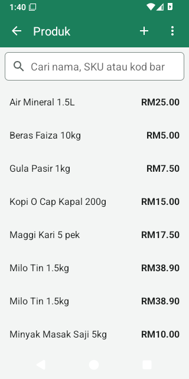
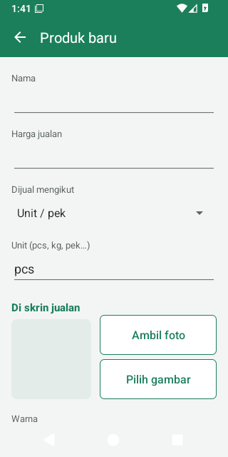
Senarai produk
- Cari mengikut nama, SKU atau kod bar. Dua digit atau lebih menjumpai kod bar yang bermula dengan digit itu; perkataan menjumpai nama (setiap perkataan boleh menjadi permulaan sesuatu perkataan dalam nama, dalam apa-apa susunan). Mengimbas kod bar di skrin ini memasukkannya ke dalam kotak carian.
- Setiap baris menunjukkan harga (bagi produk yang ditimbang, harga sekilogram), Stok, dan TERSEMBUNYI bagi produk yang disembunyikan dari skrin jualan. Ketik baris untuk menyuntingnya.
- + menambah produk. Untuk memasukkan banyak produk, ketik Simpan dan tambah lagi sebagai ganti Simpan: produk itu disimpan dan borang baharu dibuka dengan kategori dan cukai yang sama.
- Mencari kod bar yang tiada pada mana-mana produk? “Tiada produk dengan kod bar … Ketik di sini untuk menambahnya.” membuka produk baharu dengan kod bar itu sudah diisi.
- ⋮ mengandungi Import produk (CSV), Eksport produk (CSV) dan Contoh fail CSV — lihat Banyak produk sekali gus (CSV).
Cara paling cepat untuk menambah produk ialah di kaunter: imbas kod barnya. Jika kaunter belum mengenalinya, ia menawarkan Tambah produk; selepas disimpan, produk itu juga masuk ke bil.
Borang produk
Hanya Nama dan Harga jualan yang wajib. Yang lain boleh ditambah kemudian.
- Nama
- Nama yang ditunjukkan pada bil, resit dan laporan.
- Harga jualan
- Harga seunit (atau sekilogram bagi produk yang ditimbang). Taip seperti
12.50. Ia boleh dibiarkan kosong hanya bagi produk yang harganya ditaip di kaunter. Bagi produk unit, harga 0.00 menyebabkan kaunter meminta harga setiap kali. Produk yang ditimbang mesti ada harga sekilogram: pada harga 0.00 ia dijual percuma. - Dijual mengikut
- Unit / pek (yang biasa), Berat (kaunter meminta berat, harganya bagi sekilogram), atau Harga dimasukkan di kaunter (juruwang menaip harga setiap kali — untuk barang seperti kuih atau barang longgar yang berlainan harga). Lihat Cara produk dijual.
- Unit (pcs, kg, pek…)
- Dipaparkan selepas kuantiti dan harga, contohnya RM8.00/kg. Memilih Berat menukar pcs kepada kg dengan sendirinya.
- Di skrin jualan
- Gambar (Ambil foto, Pilih gambar, Buang gambar) dan Warna untuk petak produk itu. Lihat Gambar dan warna.
- Kod bar
- Tambah kod bar (taip, atau ketik Imbas untuk menggunakan kamera). Satu produk boleh ada beberapa kod bar. Anda juga boleh terus mengimbas dengan pengimbas kod bar semasa borang dibuka: kod itu ditambah (“Kod bar … ditambah”). Tambah kod bar pek adalah untuk kod bar pada karton atau pek berbilang — lihat Kod bar, pek dan karton.
- PLU timbangan
- Kod item yang dicetak oleh penimbang anda pada labelnya — lihat Label penimbang.
- Maklumat lanjut
- Kategori (tab tempat produk itu muncul di kaunter), Cukai (hanya jika anda mengenakan cukai di kaunter — lihat Kadar cukai), Harga kos (harga yang anda bayar kepada pembekal untuk seunit atau sekilogram; digunakan untuk keuntungan dan nilai stok, dan dikemas kini dengan sendirinya apabila anda menerima penghantaran), SKU / kod item (kod anda sendiri; boleh dicari, dan mengimbasnya juga menjumpai produk itu), Jejak stok (hidup secara lalai; matikan untuk barang yang anda tidak kira, seperti perkhidmatan atau beg plastik), Amaran stok rendah pada (memberi amaran apabila stok turun ke paras ini; kosong atau 0 = tiada amaran), Stok permulaan (produk baharu sahaja: berapa banyak yang ada di rak sekarang).
- Papar dalam carian dan katalog
- Matikan untuk menyembunyikan produk daripada petak, carian dan carian nama dalam semak harga. Kod bar produk yang tersembunyi masih boleh diimbas dan dijual; produk itu kekal dalam senarai produk dengan tanda TERSEMBUNYI. Gunakan ini untuk produk yang hanya dijual dengan mengimbas, atau yang disimpan untuk kemudian. Untuk menghentikan sesuatu produk daripada dijual langsung, padamkannya: jualan lepasnya kekal dalam laporan.
Bagi produk sedia ada, borang juga menunjukkan Stok sekarang, Sejarah stok dan Laras stok, serta butang Padam. Memadam akan bertanya dahulu (“Jualan lalu kekal dengan barisnya.”); selepas itu kod barnya tidak lagi boleh diimbas. Jika sandaran Google Drive dihidupkan, produk itu hilang dari setiap kaunter.
Apabila kod bar yang anda tambah sudah digunakan oleh produk lain, aplikasi bertanya “Kod bar sudah digunakan… Simpan juga?”. Jika anda tetap menyimpannya, imbasan akan memilih produk yang kod barnya ditambah terakhir.
Perubahan yang dibuat dalam borang ini pada harga, “dijual mengikut”, cukai, kos dan kod bar (serta Tukar harga dalam Semak harga) dicatat dalam Log aktiviti sebagai Harga produk diubah, bersama nama orang yang membuatnya. Tiada skrin sejarah harga yang berasingan: tapis Log aktiviti sebagai gantinya. Import CSV dicatat sekali sahaja, sebagai Produk diimport.
Cara produk dijual
| Dijual mengikut | Di kaunter |
|---|---|
| Unit / pek | Satu imbasan atau ketikan menambah 1. Mengimbas produk yang sama sekali lagi menambah 1 lagi pada baris yang sama. |
| Berat | Kaunter meminta berat pada pad kekunci. Digit diisi dari kanan dengan tiga tempat perpuluhan:
menaip 1 2 5 0 memberi 1.250 kg. Label penimbang sudah membawa berat atau
harga. |
| Harga dimasukkan di kaunter | Petaknya menunjukkan Masukkan harga; juruwang menaip harga setiap kali. |
Jualan tidak pernah disekat oleh stok: produk boleh dijual walaupun aplikasi menganggap stoknya sudah habis. Stok mungkin menjadi kurang daripada sifar sehingga penghantaran atau kiraan seterusnya membetulkannya.
Kod bar, pek dan karton
- Kod bar dikemaskan semasa disimpan: ruang dan sengkang dalam EAN/UPC dibuang, angka 0 di hadapan yang dibuang oleh hamparan dikembalikan, dan GTIN karton 14 digit yang bermula dengan 0 disimpan sebagai EAN-13nya.
- Tambah kod bar pek meminta Kod bar, Bilangan unit dalam pek (2 atau lebih) dan Harga pek pilihan (kosong = unit × harga). Mengimbas kod bar itu di kaunter memasukkan satu baris “nama x24” pada harga pek dan menolak 24 unit daripada stok. Semasa menerima stok, mengimbas kod bar karton menambah semua unitnya sekali gus.
Label penimbang
Banyak kedai menimbang barang longgar pada penimbang yang mencetak label. Kod bar pada label membawa kod item (PLU) dan berat atau harga. LekasPOS boleh membaca label ini:
- Pada setiap produk yang ditimbang, taip kod item penimbang dalam PLU timbangan (sifar di hadapan tidak penting).
- Semak format label dalam Tetapan → Kedai & resit → Label penimbang → Format label.
Format lalai sesuai untuk kebanyakan penimbang:
20IIIIIWWWWWC(awalan 20, kod item 5 digit, berat dalam gram) dan21IIIIIPPPPPC(awalan 21, kod item, harga dalam sen). Dalam sesuatu format, digit ialah awalan tetap,Ikod item,Wberat dalam gram,Pharga dalam sen,Xdigit yang diabaikan danCdigit semak. Beberapa format dipisahkan dengan koma. - Imbas label di kaunter: label berat memberi berat × harga sekilogram; label harga memberi harga yang dicetak dengan tepat. Label yang dicetak dengan berat 0 atau harga 0.00 menyebabkan kaunter bertanya.
Gambar dan warna
Gambar dan warna membantu juruwang mencari barang dengan cepat di skrin jualan.
- Ambil foto membuka aplikasi kamera telefon (kali pertama, Android meminta kebenaran kamera). Pilih gambar mengambil gambar dari galeri, fail atau Google Drive.
- Gambar dijadikan segi empat sama yang kecil (bahagian tengah foto dikekalkan) supaya ia tidak memenuhkan telefon. Jika sandaran Google Drive dihidupkan, gambar itu sampai ke kaunter lain juga.
- Warna: dua belas warna atau Tiada warna. Produk tanpa warnanya sendiri mengambil warna kategorinya. Petak berwarna menunjukkan teks putih.
- Saiz petak ditetapkan bagi setiap kaunter dalam Tetapan → Saiz barang di skrin jualan.
Kategori
Menu → Urus kedai › → Kategori. Kategori menjadi tab dalam senarai barang di skrin jualan (selepas Laris dan Semua) dan mengumpulkan jualan dalam laporan.
- + menambah kategori (nama dan warna). Ketik kategori untuk menukar nama atau warnanya.
- Tekan dan tahan (tekan lama) kategori untuk memadamnya. Produknya kekal, tanpa kategori.
- Kategori disenaraikan mengikut abjad. Memindahkan produk ke kategori lain turut memindahkan jualan lepasnya dalam laporan kategori.
Kadar cukai
Menu → Urus kedai › → Kadar cukai (memerlukan Ubah tetapan). Kebanyakan kedai runcit kecil di Malaysia tidak mengenakan cukai di kaunter: jika begitu, biarkan senarai ini kosong dan jangan pilih apa-apa di bawah Cukai pada produk.
- + menambah kadar: nama (contohnya SST) dan Kadar dalam %. Ketik kadar untuk mengubahnya; tekan lama untuk memadamnya (produk yang menggunakannya tidak lagi dikenakan cukai).
- Berikan kadar kepada setiap produk yang dikenakan cukai dalam borang produk (Maklumat lanjut → Cukai).
- Tetapan → Kedai & resit → Harga termasuk cukai (hidup secara lalai) menentukan sama ada harga di rak anda sudah termasuk cukai (cukai dikira daripada harga itu) atau cukai ditambah di atas harga di kaunter.
- Resit mencetak ringkasan cukai dengan nama dan amaun bagi setiap kadar.
Kaedah bayaran
Menu → Urus kedai › → Tetapan → Kaedah bayaran (memerlukan Ubah tetapan). Aplikasi bermula dengan Tunai, Kad, E-dompet / QR dan Kredit pelanggan. Tambah kaedah anda sendiri, seperti DuitNow atau Touch ’n Go, dengan +:
- Nama (pada resit) dan Jenis: E-dompet atau QR (jumlah tepat), Kad (jumlah tepat) atau Lain-lain (jumlah tepat). Semuanya membayar amaun tepat; hanya tunai yang dibundarkan kepada 5 sen dan memberi baki.
- Membuka laci wang — tandakan untuk kaedah yang wangnya dimasukkan ke dalam laci.
- Dipaparkan di kaunter — nyahtanda untuk menyembunyikan kaedah. Kaedah tidak boleh dipadam (jualan lama masih menyebut namanya): sembunyikan sahaja.
- LekasPOS tidak bersambung dengan terminal kad atau e-dompet: terima bayaran di terminal atau papan QR anda seperti biasa, kemudian ketik kaedah itu dalam LekasPOS untuk merekodkannya. Setiap kaedah dikira berasingan dalam laporan syif dan laporan jualan.
- Menukar nama kaedah yang sudah digunakan juga menukar namanya pada salinan resit lama dan laporan; aplikasi memberi amaran dahulu.
Banyak produk sekali gus (CSV)
Untuk memasukkan atau mengubah banyak produk, gunakan hamparan (Google Sheets atau Excel) dan fail CSV.
- Dalam Produk → ⋮ ketik Contoh fail CSV (atau Eksport produk (CSV) untuk bermula daripada produk sedia ada anda) dan Kongsi kepada diri sendiri atau Simpan sebagai fail.
- Buka fail itu dalam Google Sheets atau Excel. Isi satu baris bagi setiap produk. Formatkan lajur kod bar sebagai teks; jika tidak, hamparan akan menukar kod bar menjadi nombor seperti 9.55E+12.
- Simpan atau muat turunnya sebagai CSV (dalam Excel pilih CSV UTF-8 untuk mengekalkan huruf Melayu, Cina atau Tamil). Fail Excel (.xlsx) tidak boleh dibaca.
- Dalam Produk → ⋮ ketik Import produk (CSV) dan pilih fail itu. Pratonton menunjukkan produk baharu, produk yang akan dikemas kini dan setiap baris yang bermasalah (dengan nombor barisnya). Belum ada apa-apa yang diubah.
- Ketik Import sekarang. Import diteruskan walaupun anda meninggalkan skrin itu; jika aplikasi tertutup separuh jalan, mengimport fail yang sama sekali lagi akan menyambung dari tempat ia berhenti.
| Lajur | Apa yang perlu ditulis |
|---|---|
name (wajib) | Nama produk (hingga 120 aksara). |
price (wajib) | Harga jualan, seperti 12.50 atau RM12.50. |
barcodes | Satu atau lebih, dipisahkan dengan | atau ;. |
sku | Kod item anda. |
category | Nama kategori; nama baharu mencipta kategori baharu. |
unit | pcs, kg, pek… |
cost | Harga kos. |
tax | Nama atau peratusan kadar cukai (SST, 6%), atau none. Kadar itu mesti sudah wujud dalam Kadar cukai. |
sold by | piece, weight atau open price. |
track stock, active | yes atau no (active = dipaparkan di kaunter). |
stock | Bagi produk baharu, stok permulaan. |
low stock | Paras amaran stok rendah. |
id | Ditulis oleh eksport (#…); kekalkannya supaya produk yang betul dikemas kini. |
Tajuk lajur juga boleh ditulis dalam bahasa Melayu atau perkataan lain yang biasa (nama, harga, kod bar, kategori, kos, stok, selling price, qty…), dalam huruf besar atau kecil.
- Baris dipadankan dengan produk sedia ada mengikut
id, kemudian kod bar, kemudian SKU. Jika tiada padanan, ia dianggap produk baharu. Jadi, import sesuatu fail sekali sahaja: produk tanpa id, kod bar atau SKU akan dicipta dua kali. Untuk mengubah produk kemudian, eksport produk dahulu dan sunting fail itu. - Bagi produk sedia ada, nama dan harga sentiasa diambil daripada fail — jadi mulakan dengan Eksport produk (CSV) yang baharu, jangan fail lama. Mana-mana sel kosong yang lain tidak mengubah apa-apa. Kod bar dalam fail ditambah, tidak pernah dibuang. Import tidak pernah memadam apa-apa.
- Stok: produk baharu mendapat lajur
stocksebagai stok permulaannya. Stok produk sedia ada hanya berubah jika anda menghidupkan Tetapkan juga stok produk sedia ada mengikut kuantiti dalam fail (direkodkan sebagai kiraan stok). Stok memerlukan kebenaran Terima, laras dan kira stok. - Baris yang namanya bermula dengan
EXAMPLEatauCONTOHdilangkau. Sehingga 100,000 baris bagi setiap fail. - Fail CSV tidak boleh menetapkan kod bar pek, PLU timbangan, gambar atau warna: tambah semua itu dalam borang produk.
8. Promosi
Menu → Urus kedai › → Promosi. Promosi ialah tawaran yang digunakan oleh kaunter dengan sendirinya apabila barang yang betul ada dalam bil — juruwang tidak perlu buat apa-apa.
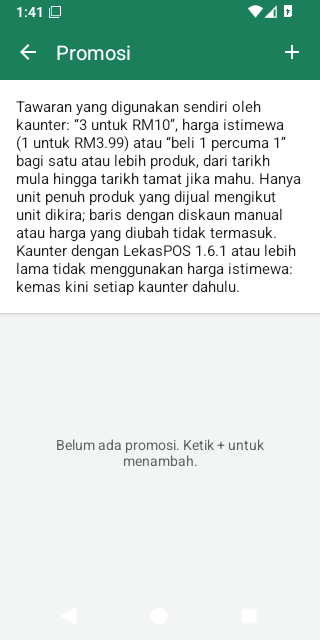
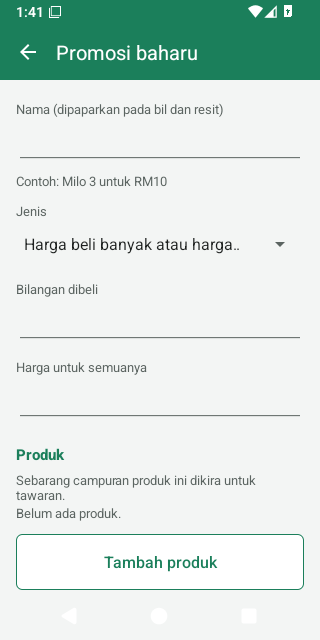
| Jenis | Contoh | Apa yang pelanggan dapat |
|---|---|---|
| Harga beli banyak atau harga istimewa | “Milo 3 untuk RM10” | Setiap kumpulan 3 berharga RM10. Barang ke-4 dijual pada harga biasa. |
| Harga beli banyak atau harga istimewa dengan Bilangan dibeli = 1 | “Harga istimewa RM3.99” | Harga istimewa untuk satu barang, contohnya selama seminggu. |
| Beli X percuma Y | “Beli 1 percuma 1” | Dalam setiap set 2, yang lebih murah adalah percuma. |
Membuat promosi
- Ketik +. Taip Nama (nama ini dicetak pada bil dan resit, cth. Milo 3 untuk RM10).
- Pilih Jenis, kemudian Bilangan dibeli dan sama ada Harga untuk semuanya atau Bilangan percuma.
- Tambah produk — satu atau lebih. Sebarang campuran produk ini dikira untuk tawaran itu (contohnya “mana-mana 3 perisa untuk RM10”).
- Tarikh (pilihan): Bermula dan Tamat (hari terakhir tawaran berjalan). Tanpa tarikh, tawaran berjalan sehingga anda mematikannya.
- Biarkan Berjalan dihidupkan dan ketik Simpan.
Perkara yang perlu diketahui
- Hanya produk yang dijual mengikut unit layak. Barang yang ditimbang, barang yang harganya dimasukkan di kaunter, kod bar pek dan label penimbang tidak termasuk.
- Baris yang diberi diskaun manual atau harga yang diubah terkeluar daripada tawaran (perubahan anda yang diutamakan).
- Apabila barang yang berlainan harga dicampur, pelanggan mendapat penjimatan yang lebih besar. Tawaran tidak pernah menjadikan sesuatu kumpulan lebih mahal daripada harga biasanya.
- Penjimatan ditunjukkan pada baris bil (“· nama promosi −RM…”) dan pada resit. Diskaun bil dikira selepas promosi.
- Bayaran balik satu barang daripada promosi membayar balik harga sebenar barang itu.
- Jika satu produk berada dalam dua promosi yang sedang berjalan, hanya satu daripadanya yang digunakan.
- Semak harga menunjukkan promosi yang digunakan pada sesuatu produk.
- Jika ada beberapa kaunter, kemas kini setiap kaunter: kaunter yang menggunakan LekasPOS 1.6.1 atau lebih lama tidak menggunakan harga istimewa.
- Matikan Berjalan untuk menghentikan tawaran buat sementara; padamkannya dengan Padam. Jualan yang sudah dibuat kekal dengan harganya.
9. Stok
Menu → Urus kedai › → Inventori, untuk kakitangan yang mempunyai kebenaran Terima, laras dan kira stok (pemilik dan pengurus secara lalai).
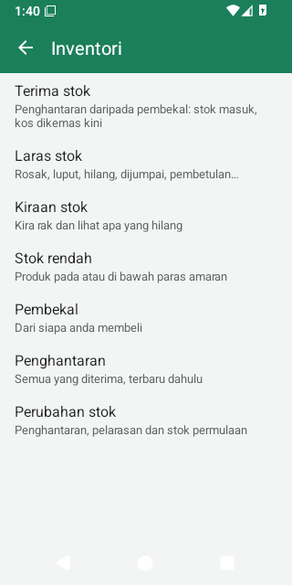
Bagaimana aplikasi mengetahui stok anda
Stok sesuatu produk = kiraan terakhir + penghantaran dan pelarasan sejak itu − jualan sejak itu + bayaran balik yang dikembalikan ke rak. Jualan yang dibatalkan tidak dikira. Stok boleh menjadi kurang daripada sifar (jualan tidak pernah disekat); kiraan stok membetulkannya.
Jualan tidak pernah mengubah stok produk dengan Jejak stok dimatikan, dan produk itu tidak mendapat amaran stok rendah. Jangan terima atau kira stok produk sebegini: angka stoknya hanya akan terus bertambah.
Terima stok (penghantaran)
- Inventori → Terima stok.
- Ketik butang pembekal untuk memilih Pembekal (atau Pembekal baru), dan taip No. invois / DO jika mahu (anda boleh mengimbas kod bar pada DO ke dalamnya).
- Imbas setiap produk: setiap imbasan menambah satu unit (kod bar karton menambah semua unitnya). Atau ketik Tambah item, pilih produk itu dan taip bilangannya. Produk yang ditimbang sentiasa meminta berat. Mengimbas atau menambah produk yang sama sekali lagi menambah pada barisnya.
- Ketik baris untuk menukar Kuantiti, Kos seunit, atau Amaun baris (daripada invois) — menaip amaun dalam invois memastikan jumlahnya tepat dan mengira kos seunit dengan sendirinya. Buang mengeluarkan baris itu.
- Ketik Simpan penghantaran dan sahkan. Stok bertambah dan harga kos setiap produk dikemas kini.
Harga kos yang baharu ialah purata bagi stok yang ada dan penghantaran itu (purata bergerak). Jika tiada stok, belum ada kos, atau produk itu tidak menjejak stok, harga kos menjadi kos penghantaran itu.
Penghantaran yang separuh dimasukkan tetap disimpan walaupun telefon berdering, aplikasi tertutup atau telefon dimulakan semula: buka Terima stok sekali lagi untuk meneruskan. × (Buang) membuangnya. Penghantaran yang sudah disimpan tidak boleh disunting atau dipadam; gunakan Laras stok untuk membetulkan kesilapan.
Laras stok
Untuk stok yang keluar atau masuk tanpa jualan atau penghantaran: Inventori → Laras stok → pilih produk (atau Laras stok dalam borang produk).
- Pilih sebab: Rosak, Luput, Hilang, Kecurian, Kegunaan sendiri, Dipulangkan kepada pembekal (semua ini sentiasa mengurangkan stok), Dijumpai (sentiasa menambah), atau Pembetulan / Lain-lain (pilih Keluarkan atau Tambah).
- Taip kuantiti, nota (pilihan), dan Simpan.
- Setiap pengurangan dicatat dalam Log aktiviti sebagai Stok dihapus kira bersama nilainya pada harga kos, supaya pemilik nampak stok yang dikeluarkan secara manual.
Kiraan stok (stock take)
- Inventori → Kiraan stok → +. Beri nama (tarikh hari ini sudah diisi) dan pilih Semua produk atau satu kategori. Ketik Mula.
- Imbas atau ketik produk, taip jumlah yang ada di rak, dan ketik OK. OK tanpa menaip apa-apa merekodkan 0.
- Mengira produk sekali lagi menggantikan kiraannya — jumlahkan dahulu produk yang disimpan di dua tempat. Produk yang tidak anda kira kekal dengan stoknya.
- Setiap kiraan berkuat kuasa serta-merta, jadi anda boleh terus menjual semasa mengira. Beberapa orang boleh mengira pada masa yang sama di kaunter yang berlainan.
- Laporan kiraan menunjukkan kuantiti dijangka dan dikira bagi setiap produk serta nilai lebih, kurang dan bersih pada harga kos.
- Apabila selesai, buka laporan itu dan ketik × (Tamatkan kiraan). Menamatkan kiraan hanya menutupnya; stok sudah pun ditetapkan.
Stok rendah
Inventori → Stok rendah menyenaraikan produk yang berada pada atau di bawah paras Amaran stok rendah (tetapkan dalam borang produk). Selepas jualan, kakitangan yang dibenarkan mengurus stok juga melihat “Hampir habis: …” pada hasil jualan.
Pembekal dan penghantaran
- Inventori → Pembekal: nama, orang untuk dihubungi, telefon, e-mel, alamat dan nota. Ketik untuk menyunting, tekan lama untuk memadam (rekod penghantaran lalu kekal). Penghantaran dalam pembekal menunjukkan apa yang datang daripadanya.
- Inventori → Penghantaran: semua yang diterima, yang terbaru dahulu; ketik satu untuk melihat baris dan jumlahnya.
Sejarah stok dan perubahan stok
- Sejarah stok (dari borang produk, atau ketik produk dalam Stok rendah): setiap jualan, bayaran balik, penghantaran, pelarasan dan kiraan bagi satu produk, dengan baki stok selepas setiap satu. Ketik jualan untuk membuka resitnya.
- Inventori → Perubahan stok: setiap penghantaran, pelarasan, hapus kira dan stok permulaan bagi semua produk.
10. Kakitangan, PIN dan peranan
Menu → Urus kedai › → Tetapan → Kakitangan (perlu kebenaran Urus kakitangan dan peranan — secara lalai hanya pemilik).
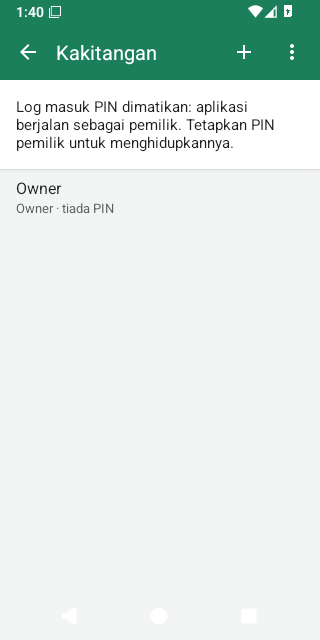
Menghidupkan log masuk PIN
Selagi tiada sesiapa yang mempunyai PIN, aplikasi berjalan sebagai pemilik dengan semua kebenaran — sesuai untuk kedai yang diuruskan seorang diri. Untuk memberi setiap orang log masuk sendiri:
- Tetapan → Kakitangan → ketik Pemilik. Untuk menggunakan nama anda sendiri, taip nama itu dan ketik Simpan, kemudian ketik pemilik sekali lagi. Ketik Tetapkan PIN dan taip PIN 4–6 digit dua kali. Elakkan 1234 atau tarikh lahir.
- Aplikasi memaparkan Kod pemulihan pemilik (contohnya
7KQM-3HXP-9RTA). Catat kod ini dan simpan di tempat selamat: ia ditunjukkan sekali sahaja. Tanpa kod ini, hanya pemilik lain boleh memberi pemilik PIN baharu. Ketik Saya sudah catat. - Log masuk PIN kini hidup dan anda sudah log masuk. Tambah setiap orang dengan + (Kakitangan baharu): nama, Peranan, Aktif (boleh log masuk), kemudian PIN mereka.
PIN pertama mestilah PIN pemilik. Sekurang-kurangnya seorang pemilik yang boleh log masuk akan sentiasa kekal: aplikasi tidak membenarkan PIN, peranan atau akses pemilik yang terakhir dibuang.
Log masuk dan mengunci kaunter
- Skrin log masuk bertanya Siapa yang menggunakan kaunter? Ketik nama anda dan taip PIN anda. Bukan anda? membawa anda kembali ke senarai nama.
- Selepas 5 kali PIN salah bagi seseorang, kaunter membuatnya menunggu 30 saat, kemudian 1, 2, 4, 8 dan paling lama 15 minit selepas setiap PIN salah yang berikutnya. Menukar jam telefon tidak memendekkan masa menunggu. Mulai PIN salah yang ke-5, setiap satu direkodkan dalam Log aktiviti (Terlalu banyak PIN salah).
- Kunci kaunter melalui nama anda di bahagian atas → Kunci / tukar pengguna, atau Menu → Kunci / tukar pengguna. Nama anda di bahagian atas juga menawarkan Tukar PIN saya.
- Kaunter terkunci sendiri selepas 5 minit tidak digunakan. Tukar tetapan ini bagi setiap kaunter di Kakitangan → ⋮ → Bila kaunter dikunci: selepas 1, 2, 5, 10 atau 30 minit tidak digunakan, selepas setiap jualan (sesuai untuk kaunter yang dikongsi beberapa orang), atau hanya apabila seseorang menguncinya. Kaunter tidak akan terkunci di tengah-tengah pembayaran.
Lupa PIN
- Juruwang atau pengurus: pemilik (atau sesiapa yang dibenarkan mengurus kakitangan) menetapkan PIN baharu di Tetapan → Kakitangan → orang itu → Tukar PIN.
- Pemilik: di skrin log masuk, pilih pemilik → Lupa PIN? → taip kod pemulihan → taip PIN baharu dua kali. Kakitangan → ⋮ → Kod pemulihan baharu membuat kod baharu (kod lama tidak lagi berfungsi).
Peranan dan kebenaran
Setiap orang ada satu peranan. Kakitangan → ⋮ → Peranan menyenaraikan semua peranan; ketik satu peranan untuk mengubah apa yang Boleh dilakukannya, atau tambah peranan anda sendiri dengan + (contohnya “Juruwang kanan”).
| Kebenaran | Membenarkan | Pemilik | Pengurus | Juruwang |
|---|---|---|---|---|
| Beri diskaun | Diskaun bil dan diskaun barang | ✓ | ✓ | |
| Ubah harga dalam bil | Mengubah harga barang dalam bil | ✓ | ✓ | |
| Batalkan jualan | Membatalkan jualan atau bayaran balik | ✓ | ✓ | |
| Bayaran balik | Bayaran balik dan pemulangan barang | ✓ | ✓ | |
| Cetak salinan resit | Salinan resit dan berkongsi resit lama | ✓ | ✓ | ✓ |
| Buka laci wang | Membuka laci tanpa jualan | ✓ | ✓ | |
| Wang masuk, wang keluar dan simpanan | Pergerakan tunai semasa syif | ✓ | ✓ | |
| Lihat tunai dijangka dan laporan syif | Laporan syif, syif lepas, lebih/kurang | ✓ | ✓ | |
| Urus pelanggan, terima bayaran hutang | Tambah/sunting pelanggan, bayaran hutang | ✓ | ✓ | ✓ |
| Jual secara kredit | Bayar dengan kredit pelanggan dalam had | ✓ | ✓ | ✓ |
| Melebihi had kredit, laraskan baki | Jualan melebihi had, had kredit, pelarasan baki | ✓ | ✓ | |
| Sunting produk dan kategori | Produk, kategori, promosi, CSV, perubahan harga dalam Semak harga | ✓ | ✓ | |
| Terima, laras dan kira stok | Inventori | ✓ | ✓ | |
| Lihat laporan jualan, untung dan nilai stok | Laporan dan eksport | ✓ | ✓ | |
| Lihat log aktiviti | Log aktiviti, Semakan staf | ✓ | ✓ | |
| Ubah tetapan | Semua tetapan, kadar cukai, kaedah bayaran, sandaran, kemas kini, diagnostik | ✓ | ||
| Urus kakitangan dan peranan | Kakitangan, PIN, peranan | ✓ |
- Peranan Pemilik sentiasa boleh melakukan semuanya. Pemilik, Pengurus dan Juruwang tidak boleh dipadam, tetapi Pengurus dan Juruwang boleh diubah.
- Hanya pemilik boleh menjadikan seseorang pemilik atau mengubah pemilik. Tiada sesiapa boleh meluaskan peranannya sendiri atau memberi kebenaran yang dia sendiri tiada.
- Orang yang telah dibuang tidak lagi boleh log masuk; namanya kekal pada jualan dan resitnya serta dalam Log aktiviti.
Apabila juruwang memerlukan pengurus
- Satu tindakan: apabila juruwang mengetik sesuatu yang tidak dibenarkan oleh peranannya (contohnya Benarkan apabila melebihi had kredit pelanggan), kaunter memaparkan Kelulusan pengurus dengan senarai orang yang boleh melakukannya. Pengurus menaip PIN mereka; tindakan itu direkodkan atas nama juruwang, “diluluskan oleh” pengurus.
- Satu bil penuh: Menu → PIN pengurus. Untuk bil ini, juruwang boleh memberi diskaun, mengubah harga dan menguruskan pelanggan serta kredit, sehingga bil dibayar, ditangguh atau dikosongkan (atau selepas 5 minit). Bar atas memaparkan Pengurus: nama ✕ — ketik untuk menamatkan bantuan itu. Tugas lain pengurus turut dipaparkan (Buka laci wang, butang Bayaran balik / pulangan dan Batalkan pada resit, Urus kedai), tetapi setiap satu meminta PIN pengurus sekali lagi. Selain cara ini, juruwang tidak pernah melihat bayaran balik dan pembatalan.
- Skrin pengurusan (Produk, Inventori, Laporan…): PIN pengurus diminta sekali dan kekal sah sehingga skrin itu ditutup.
11. Syif dan wang tunai
Syif ialah masa seseorang bertugas di satu kaunter, dari mengira laci wang pada permulaan hingga mengiranya semula pada akhirnya. Aplikasi mengira berapa banyak wang tunai yang sepatutnya ada dalam laci, jadi sebarang perbezaan terus kelihatan.
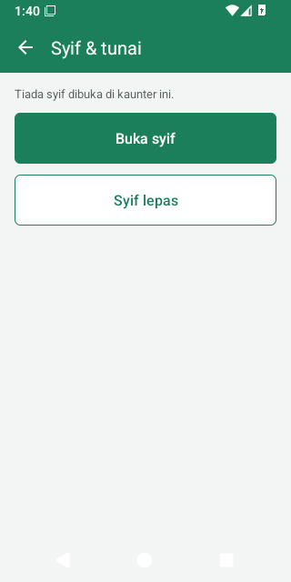
Perlukah saya menggunakan syif?
Di Tetapan → Kedai & resit → Syif dan pelanggan:
- Wajibkan syif dibuka untuk menerima bayaran — mati secara lalai, dan hidup dengan sendirinya sebaik sahaja juruwang atau pengurus boleh log masuk dengan PIN. Pemilik boleh mematikannya semula; kaunter baharu yang menyertai kedai mungkin menghidupkannya semula, jadi semak tetapan ini selepas menambah kaunter.
- Kira laci apabila juruwang bertukar — hidup secara lalai (lihat Pertukaran juruwang).
Membuka syif
Apabila kedai mewajibkan syif, kaunter bertanya dengan sendirinya apabila seseorang mula menggunakannya: Mulakan syif. Anda sentiasa boleh menggunakan Menu → Buka syif.
- Kira wang tunai dalam laci — wang kecil untuk baki pelanggan (wang apungan) — dan taip jumlahnya. Kira wang & syiling membolehkan anda menaip bilangan setiap jenis wang kertas dan syiling sebagai ganti.
- Jika penutupan syif yang lepas meninggalkan sejumlah wang dalam laci, jumlah itu sudah diisi: tekan OK jika itu yang anda kira. Jika kiraan anda berbeza, kaunter bertanya Tidak sama dengan yang ditinggalkan: Kira semula, atau Kekalkan kiraan anda (perbezaannya direkodkan untuk pemilik).
Wang masuk, wang keluar dan simpanan wang
Menu → Syif & tunai, semasa syif dibuka di kaunter ini (perlu kebenaran Wang masuk, wang keluar dan simpanan):
- Wang masuk — wang yang dimasukkan ke dalam laci (cth. tambahan wang kecil).
- Wang keluar — wang yang dikeluarkan untuk sesuatu tujuan (cth. membayar pembekal); sebab wajib diisi.
- Simpanan wang — wang yang dibawa ke peti besi atau ke bank semasa kedai beroperasi.
Setiap satu membuka laci, mengubah tunai dijangka dan direkodkan bersama nama orang yang melakukannya.
Menutup syif
Menu → Tutup syif, dalam tiga langkah:
- Kira laci: kira semua wang tunai dan taip jumlahnya (atau Kira wang & syiling).
- Tinggal dalam laci: berapa yang ditinggalkan sebagai wang kecil untuk syif seterusnya (sudah diisi dengan wang apungan syif ini).
- Semak Dikira / Tinggal dalam laci / Keluarkan untuk pemilik, tambah catatan jika mahu (cth. sebab wang kurang), dan sahkan.
Juruwang kemudian hanya melihat “Keluarkan RM… untuk pemilik dan tinggalkan RM… dalam laci” (penutupan “buta” — mereka tidak diberitahu jumlah yang dijangka). Kakitangan yang dibenarkan melihat laporan syif mendapat laporan syif. Laporan ini dicetak dengan sendirinya jika resit dicetak selepas setiap jualan; jika tidak, ketik Cetak laporan.
Terlupa menutup syif semalam? Pada waktu pagi kaunter memaparkan Syif semalam masih dibuka: Kira laci menutup syif itu dan memulakan syif hari ini dengan kiraan yang sama.
Pertukaran juruwang
Apabila seseorang log masuk ketika syif orang lain masih dibuka di kaunter itu, kaunter bertanya Ambil alih kaunter?
- Kira laci — menutup syif orang itu dengan kiraan ini dan memulakan syif anda dengan kiraan yang sama. Dengan itu, setiap orang hanya bertanggungjawab atas wang tunai dalam syifnya sendiri.
- Bukan sekarang — anda terus menjual dalam syif orang itu; perkara ini direkodkan (Jual dalam syif orang lain tanpa kiraan laci).
Laporan syif
Syif & tunai → Laporan syif (syif semasa) atau Syif lepas (semua kaunter). Laporan ini menunjukkan jualan, bayaran balik, pembatalan, diskaun, cukai, setiap kaedah bayaran, dan laci wang:
| Baris | Maksud |
|---|---|
| Wang apungan | Wang tunai yang dikira pada permulaan syif. |
| + Jualan tunai, Bayaran balik tunai (−), Dibatalkan (tunai) (−) | Wang tunai yang diterima dan dibayar balik dalam syif ini. |
| + Wang masuk, − Wang keluar, − Simpanan wang | Pergerakan tunai. |
| + Bayaran hutang tunai | Pelanggan yang membayar hutang mereka secara tunai. |
| Tunai dijangka | Jumlah yang sepatutnya ada dalam laci. |
| Tunai dikira | Jumlah yang dikira semasa syif ditutup. |
| Lebih / kurang | Dikira − dijangka (+ = lebih daripada yang dijangka). |
Hanya Tunai dikira dalam laci. Kad, e-dompet, kredit dan sebarang kaedah yang anda tambah disenaraikan di bawah bayaran tetapi tidak termasuk dalam tunai dijangka, walaupun kaedah itu membuka laci. Bahagian Semakan menyenaraikan perkara yang patut disemak dalam syif itu: bil dikosongkan, barang dibuang (terutamanya selepas jumlah ditunjuk), laci dibuka tanpa jualan, salinan resit, jualan tanpa kiraan laci, dan wang apungan yang berbeza daripada yang ditinggalkan. Cetak laporan mencetaknya.
12. Pelanggan dan kredit
Untuk kedai yang membenarkan pelanggan tetap membayar kemudian (hutang). Hidupkannya di Tetapan → Kedai & resit → Pelanggan dan kredit (bayar kemudian). Menu kemudian memaparkan Pelanggan dan skrin jualan memaparkan Tambah pelanggan.
Pelanggan
- Menu → Pelanggan. Tajuknya menunjukkan berapa orang yang berhutang dan jumlah keseluruhan hutang. Cari mengikut nama atau nombor telefon (012…, 6012… dan +6012… semuanya sepadan).
- + menambah pelanggan: Nama, telefon, e-mel, alamat, No. cukai (TIN) (untuk e-invois), catatan dan Had kredit — jumlah hutang paling banyak yang dibenarkan bagi pelanggan ini.
- Had kredit yang kosong bermakna tiada had: pelanggan boleh berhutang berapa banyak pun. Hanya kakitangan yang mempunyai kebenaran Melebihi had kredit melihat ruangan ini, jadi semak had kredit pelanggan yang ditambah oleh juruwang.
- Ketik seorang pelanggan untuk melihat Hutang (jumlah yang mereka hutang), had kredit dan penyata mereka: setiap pembelian secara kredit, pulangan, bayaran hutang dan pelarasan, bersama baki selepas setiap satu.
Menjual secara kredit
- Di skrin jualan, ketik Tambah pelanggan dan pilih pelanggan.
- Bayar → Kredit pelanggan (atau pecah bayaran: sebahagian tunai, sebahagian kredit).
- Jika melebihi had, kaunter bertanya Melebihi had kredit — Benarkan memerlukan pengurus.
Resit mencatat nama pelanggan, dan skrin selepas bayaran menunjukkan jumlah hutang terkini mereka.
Bayaran hutang dan pelarasan
- Buka pelanggan → ⋮ → Terima bayaran hutang → jumlahnya (sudah diisi dengan seluruh hutang) → Dibayar dengan. Tunai dibundarkan kepada 5 sen; melunaskan seluruh hutang secara tunai menjadikan baki tepat 0.00. Bayaran hutang tunai masuk ke dalam syif yang sedang dibuka.
- Laraskan baki (Hutang bertambah / Hutang berkurang, dengan sebab) membetulkan baki atau memberi kredit kepada pelanggan.
- Pembatalan memulangkan kredit dengan sendirinya. Bagi bayaran balik jualan kredit, biarkan Bayar balik dengan pada Kredit pelanggan: amaun itu kemudian ditolak daripada hutang pelanggan.
- Pelanggan hanya boleh dipadam apabila bakinya 0.
13. Laporan
Menu → Urus kedai › → Laporan (perlu kebenaran Lihat laporan jualan). Laporan merangkumi jualan semua kaunter di kedai (jika Sandaran Google Drive dihidupkan).
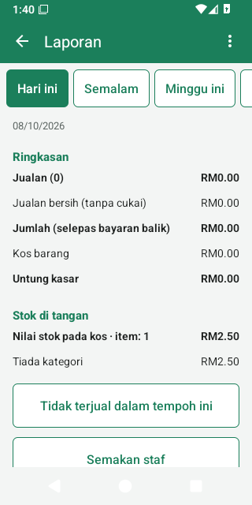
Tempoh
Hari ini, Semalam, Minggu ini, Minggu lepas, Bulan ini, Bulan lepas, Tahun ini, Tahun lepas atau Pilih tarikh. Minggu bermula pada hari Isnin.
Apa yang ditunjukkan dalam laporan
| Baris | Maksud |
|---|---|
| Jualan (N) | Bilangan jualan dan hasilnya sebelum bayaran balik. |
| Bayaran balik (N) | Wang yang dibayar balik. |
| Jualan dibatalkan | Berapa banyak jualan yang dibatalkan. Jualan yang dibatalkan tidak dikira dalam mana-mana angka. |
| Diskaun | Diskaun dan penjimatan promosi yang diberi. |
| Jualan bersih (tanpa cukai) | Selepas diskaun dan bayaran balik, tanpa cukai. |
| Cukai, Pembundaran | Cukai yang dikenakan; pembundaran tunai. |
| Jumlah (selepas bayaran balik) | Wang yang diterima. |
| Kos barang | Kos barang yang dijual kepada anda (kos puratanya semasa dijual). |
| Untung kasar, Margin kasar | Jualan bersih − kos barang; dan sebagai peratusan jualan bersih. |
| Purata jualan | Hasil bagi setiap jualan. |
| Perubahan berbanding … | Jumlah berbanding tempoh sebelumnya. Hari dan minggu dibandingkan dengan bilangan hari yang sama sejurus sebelumnya (Isnin hingga Rabu minggu ini berbanding Jumaat hingga Ahad sebelumnya). Bulan dan tahun dibandingkan dengan hari yang sama pada bulan atau tahun sebelumnya (1–8 Oktober berbanding 1–8 September). |
Di bawahnya: jumlah Mengikut hari, Mengikut minggu atau Mengikut bulan; Cara bayaran; Juruwang; Kategori (dengan untung); Paling laris (20 teratas); dan Stok di tangan — nilai stok yang anda ada hari ini pada harga kos, mengikut kategori (sama bagi setiap tempoh).
Angka untung hanya setepat harga kos anda: produk tanpa kos menunjukkan seluruh harganya sebagai untung. Menerima penghantaran memastikan kos sentiasa terkini.
Tidak terjual dalam tempoh ini
Menyenaraikan produk yang ada stok tetapi langsung tidak terjual dalam tempoh itu, bermula dengan nilai stok tertinggi — calon untuk promosi atau untuk tidak dipesan semula. Ketik satu untuk membukanya.
Semakan staf
Laporan → Semakan staf (perlu kebenaran Lihat log aktiviti) menunjukkan, bagi setiap orang dan untuk tempoh yang dipilih, perkara yang patut disemak: jualan, barang dibuang selepas jumlah ditunjuk, bil dikosongkan, barang dibuang, pembatalan, bayaran balik, diskaun dan tukar harga, laci dibuka tanpa jualan, salinan resit, wang dikeluarkan, stok dihapus kira, jualan dalam syif orang lain tanpa kiraan laci, wang apungan yang berbeza daripada yang ditinggalkan, dan tunai lebih/kurang dalam syif mereka. Orang yang paling banyak perlu disemak disenaraikan dahulu.
Semua ini bukan bukti kecurian — barang yang salah dibuang setiap hari. Tanya tentang barang yang dibuang selepas pelanggan melihat jumlah, laci dibuka tanpa jualan, wang tunai yang kurang dalam syif, dan seseorang yang jauh lebih banyak daripada orang lain.
Eksport (CSV)
⋮ di skrin Laporan mengeksport tempoh yang dipilih sebagai fail CSV untuk Google Sheets atau Excel — Kongsi fail itu (WhatsApp, e-mel, Drive) atau Simpan sebagai fail:
- Ringkasan (CSV) — angka di atas, bayaran, juruwang, kategori, produk teratas, nilai stok.
- Jualan harian (CSV) — satu baris bagi setiap hari: bilangan jualan dan bayaran balik, jualan bersih, cukai, jumlah (wang yang diterima), diskaun, kos, untung kasar, dan semakan hari itu.
- Produk terjual (CSV) — setiap produk yang dijual dengan kuantiti, jualan bersih, cukai, kos dan untung.
- Resit – untuk e-invois bulanan (CSV) — setiap resit dengan tarikh, juruwang, pelanggan dan TIN, amaun dan bayaran, untuk e-invois disatukan bulanan LHDN. Jualan yang dibatalkan turut disenaraikan (status voided): tinggalkan jualan itu. Bayaran balik disenaraikan dengan amaun negatif.
Fail-fail ini dalam format UTF-8, jadi nama dalam bahasa Melayu dan Cina dipaparkan dengan betul dalam Excel.
Laporan jualan harian ke Google Drive
Mahu melihat angka jualan harian tanpa membuka aplikasi? Tetapan → Laporan jualan harian ke Google Drive → Hidupkan
dan benarkan akses Google. Setiap hari, jualan hari sebelumnya ditulis ke folder LekasPOS dalam Google Drive anda:
satu fail sebulan, contohnya 2026-10 daily-sales.csv, dengan satu baris bagi setiap hari (sama seperti eksport Jualan harian: sales dan refunds ialah bilangan,
total ialah wang).
Fail ini boleh dibuka dalam Google Sheets pada mana-mana telefon atau komputer. Hidupkannya pada satu kaunter sahaja (jika Sandaran
Google Drive dihidupkan, jualan semua kaunter sudah termasuk di dalamnya). Ia memerlukan perkhidmatan Google Play dan internet, dan hanya
dapat melihat fail yang dibuatnya.
14. Log aktiviti
Tetapan → Log aktiviti (perlu kebenaran Lihat log aktiviti) merekodkan tindakan sensitif di semua kaunter, yang terbaharu dahulu, bersama siapa yang melakukannya, siapa yang meluluskannya, amaun dan butirannya. Tapis (ikon carian) menunjukkan satu jenis tindakan sahaja.
Yang direkodkan: pembatalan, bayaran balik, diskaun dan tukar harga, barang dibuang daripada bil atau bil dikosongkan (ditandakan jika selepas jumlah ditunjuk), laci dibuka tanpa jualan, salinan resit, perubahan harga/kos/kod bar produk, produk dipadam, import, promosi, stok dihapus kira, log masuk dan terlalu banyak PIN salah, perubahan kakitangan dan peranan, syif, wang masuk/keluar/simpanan, perbezaan wang apungan, had kredit, bayaran hutang dan pelarasan, jualan kredit melebihi had, kelulusan pengurus dan perubahan tetapan (termasuk sandaran yang dipulihkan).
Rekod tidak boleh disunting atau dipadam.
15. Menjaga keselamatan data anda: sandaran, pemulihan, Google Drive
Semua data kedai — produk, jualan, stok, pelanggan, kakitangan — disimpan dalam telefon. Jika telefon hilang, rosak, ditetapkan semula, atau aplikasi dipadam, data itu turut hilang kecuali ada salinannya di tempat lain. LekasPOS membuat salinan dalam telefon setiap hari, tetapi salinan itu juga hilang bersama telefon. Jadi, sila pilih sekurang-kurangnya satu cara untuk menyimpan salinan di luar telefon:
| Cara | Sesuai untuk | Keperluan |
|---|---|---|
| Sandaran Google Drive (disyorkan) | Automatik, setiap beberapa minit; memulihkan sepenuhnya telefon yang hilang; memastikan beberapa kaunter sentiasa sama | Akaun Google, perkhidmatan Google Play, internet sekali-sekala |
| Salinan harian ke folder (kad SD / pemacu USB) | Automatik, setiap hari; tidak perlukan Google. Selamat jika telefon rosak atau ditetapkan semula — tetapi kad atau pemacu di dalam telefon turut hilang jika telefon hilang atau dicuri: keluarkannya sekali-sekala, atau gunakan juga Sandaran Google Drive | Kad SD atau pemacu USB yang sentiasa dipasang |
| Fail sandaran (simpan atau kongsi sendiri) | Salinan tambahan di mana-mana: Drive, e-mel, WhatsApp, komputer | Perlu ingat untuk melakukannya setiap beberapa hari |
Jika tiada salinan keluar dari telefon selama 3 hari, skrin jualan memaparkan Tiada sandaran.
Sandaran Google Drive
- Tetapan → Sandaran Google Drive (perlu kebenaran Ubah tetapan).
- Taip Nama kaunter ini (cth. “Kaunter 1”).
- Ketik Hidupkan segerak dan pilih akaun Google kedai. Benarkan akses apabila Google meminta.
- Sandaran pertama berjalan di latar belakang (bagi kedai yang besar, ia boleh mengambil masa beberapa minit). Status kemudian menyatakan Semua sudah disandarkan.
- Data dihantar ke folder aplikasi tersembunyi dalam Google Drive itu: ia tidak kelihatan antara fail anda dan tiada aplikasi lain boleh membacanya. LekasPOS hanya meminta akses kepada folder itu daripada Google.
- Ia berjalan sendiri sejurus selepas setiap perubahan semasa aplikasi dibuka, dan setiap 30 minit pada masa lain — bila-bila masa telefon dalam talian. Jualan tidak pernah menunggunya; kaunter yang tiada internet akan dikemas kini kemudian.
- Skrin ini menunjukkan Akaun Google, Kaunter ini, Sandaran terakhir, Perubahan menunggu dimuat naik dan Kaunter lain. Segerak sekarang menghantar dengan serta-merta. Kaunter dalam kedai ini menyenaraikan setiap kaunter bersama segerak terakhir dan versi aplikasinya.
- Log masuk semula muncul (bersama penanda Sandaran: log masuk) apabila Google memerlukan akaun itu semula, contohnya selepas kata laluan ditukar.
- Matikan segerak menghentikannya pada kaunter ini; datanya kekal dalam telefon.
- Gunakan kata laluan yang kukuh dan Pengesahan 2 Langkah pada akaun Google kedai: sandaran itu menyimpan semua data kedai.
- Ia memerlukan perkhidmatan Google Play. Pada telefon yang tiada perkhidmatan ini, gunakan salinan harian ke folder.
Sandaran dalam telefon
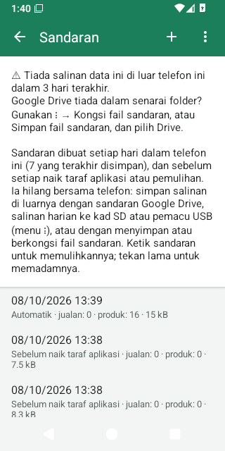
Tetapan → Sandaran (dalam versi Inggeris Backup & restore) menyenaraikan sandaran yang disimpan dalam telefon ini:
- Automatik: satu sehari, selepas pangkalan data diperiksa untuk kerosakan; 7 yang terakhir disimpan. Ia menunggu saat yang lapang (tiada bil terbuka).
- Sebelum naik taraf aplikasi: dibuat apabila kemas kini mengubah pangkalan data; 3 yang terakhir disimpan.
- Sebelum pemulihan: data yang digantikan oleh pemulihan; 3 yang terakhir disimpan.
- Dibuat sendiri: butang + (Buat sandaran sekarang). Sandaran ini tidak pernah dipadam oleh aplikasi.
Tekan lama pada sandaran untuk memadamnya. Ingat: sandaran ini hilang bersama telefon.
Salinan harian ke kad SD atau pemacu USB
- Sandaran → ⋮ → Salinan harian ke folder (kad SD / USB)…
- Pemilih folder Android dibuka. Pergi ke kad SD atau pemacu USB, cipta folder baharu (cth. “LekasPOS”) — Android 11 dan yang lebih baharu tidak membenarkan tahap teratas kad atau folder Download itu sendiri — buka folder itu dan ketik Gunakan folder ini → Benarkan.
- Aplikasi terus menyalin sandaran harian yang terbaharu ke sana (Disalin ke folder.). Selepas itu, sandaran setiap hari
disalin sebagai
lekaspos-YYYY-MM-DD-HHMM.lekasbak; 7 yang terbaharu disimpan di sana.
Salin ke folder sekarang menyalin sandaran harian yang terbaharu sekali lagi; Berhenti menyalin ke folder menghentikannya (fail yang sudah ada kekal). Jika kad dikeluarkan, skrin sandaran memaparkan Salinan terakhir ke folder gagal.
Sandaran harian mungkin sudah berusia sehingga sehari. Untuk salinan semua data sehingga saat ini (contohnya sebelum menghantar telefon untuk dibaiki), gunakan Simpan fail sandaran… sebagai ganti.
Google Drive tiada dalam senarai folder? Pada sesetengah telefon (aplikasi Google Drive versi lama), Drive tidak boleh dipilih sebagai folder. Gunakan fail sandaran sebagai ganti: ⋮ → Kongsi fail sandaran → Simpan ke Drive, atau Simpan fail sandaran… → Drive. Cara ini tidak automatik — buat yang baharu setiap beberapa hari. Atau gunakan Sandaran Google Drive, yang tidak memerlukan aplikasi Drive.
Fail sandaran
- ⋮ → Simpan fail sandaran… menyimpan fail bernama
lekaspos-backup-YYYY-MM-DD.lekasbakdi mana-mana tempat pilihan anda (Downloads, Google Drive, pemacu USB). - ⋮ → Kongsi fail sandaran menghantarnya melalui mana-mana aplikasi (Simpan ke Drive, e-mel, WhatsApp kepada diri sendiri).
- Kedua-duanya menghentikan amaran Tiada sandaran selama 3 hari — walaupun fail itu kekal dalam telefon ini (Downloads) atau perkongsian itu dibatalkan. Simpan fail itu ke Google Drive, pemacu USB atau komputer, atau hantarnya ke telefon lain.
Fail sandaran tidak disulitkan. Sesiapa yang memilikinya boleh membaca semua data kedai, termasuk data pelanggan. Jangan kongsikan fail ini dengan orang lain.
Memulihkan sandaran
- Sandaran → ketik satu sandaran dalam senarai, atau ⋮ → Pulihkan daripada fail… dan pilih fail
.lekasbak. - Aplikasi menunjukkan kandungan sandaran (tarikh, kedai, bilangan jualan dan produk) dan bertanya cara memulihkannya. Kedua-dua
pilihan menggantikan semua data dalam telefon ini dengan sandaran itu:
- Pulihkan kaunter ini (sandaran telefon ini) atau Ganti telefon lama (sandaran telefon lain) — telefon ini mengambil tempat kaunter lama; telefon lama tidak digunakan lagi.
- Tambah sebagai kaunter baharu — data yang sama, tetapi telefon ini menjadi kaunter lain, jadi kedua-dua telefon boleh digunakan.
- Sandaran diperiksa; kemudian Mula semula sekarang. Aplikasi dimulakan semula dengan data daripada sandaran.
- Sebelum memulihkan, data semasa disimpan sebagai Sebelum pemulihan: memulihkan sandaran itu membatalkan pemulihan tadi. Hanya 3 yang terakhir disimpan, jadi sebelum mencuba beberapa sandaran, ketik + (Buat sandaran sekarang) dahulu — sandaran yang dibuat sendiri tidak pernah dipadam.
- Selepas pemulihan, tiada sesiapa yang log masuk; baris gilir cetakan kosong.
- Kaunter yang menggunakan Sandaran Google Drive (atau sandaran yang telah bersegerak) kembali sebagai kaunter baharu dengan Sandaran Google Drive dimatikan: hidupkannya semula.
- Sandaran yang dibuat oleh versi LekasPOS yang lebih baharu memerlukan aplikasi dikemas kini dahulu.
- Tetapan pencetak, pengimbas dan tetapan lain bagi setiap kaunter yang disimpan dalam pangkalan data turut kembali; gambar logo resit dan bahasa aplikasi tidak.
Telefon hilang atau rosak
- Dengan Sandaran Google Drive: pasang LekasPOS pada telefon baharu → di skrin selamat datang, ketik Pulihkan atau sertai kedai saya dari Google Drive (atau Tetapan → Sandaran Google Drive) → namakan kaunter → Hidupkan segerak → pilih akaun Google yang sama. Produk, jualan, stok, pelanggan, kakitangan, promosi dan tetapan akan kembali. Telefon baharu menjadi kaunter baharu dengan awalan resit baharu. Sediakan semula pencetak, logo resit, pengimbas dan salinan hariannya.
- Dengan salinan folder atau fail sandaran: pasang LekasPOS → Tetapan → Sandaran → ⋮ → Pulihkan daripada
fail… → fail
.lekasbakyang terbaharu → Ganti telefon lama.
Apa-apa yang dijual selepas salinan terakhir keluar dari telefon lama akan hilang — sebab itulah salinan yang kerap amat penting. Jika telefon lama dicuri, tukar kata laluan akaun Google itu dan buang akses LekasPOS dalam tetapan keselamatan akaun Google.
Masalah data
Setiap hari, sebelum sandaran automatik, aplikasi memeriksa pangkalan data. Jika ia menemui kerosakan, skrin jualan memaparkan Masalah data, tiada sandaran baharu menggantikan sandaran yang baik, dan skrin Sandaran memberi penjelasan. Sila dapatkan bantuan sebelum memulihkan (lihat Mendapatkan bantuan); biasanya penyelesaiannya ialah memulihkan sandaran Automatik yang terbaharu dari sebelum masalah itu berlaku.
Jika kaunter dibuka dalam keadaan kosong dengan Masalah data, data anda diketepikan, bukan dipadam — jangan mula semula dari awal. Dapatkan bantuan dan pulihkan dalam masa 7 hari: selepas itu, sandaran harian yang baharu mula menggantikan sandaran yang baik.
Storan telefon
Jualan tidak dapat disimpan jika storan telefon penuh. Kaunter memberi amaran awal dengan Storan hampir penuh. Padam foto, video atau aplikasi yang tidak diperlukan, atau sandaran lama yang dibuat sendiri. Jika jualan gagal kerana telefon penuh, kaunter akan memberitahu anda dan menyimpan bil itu.
16. Beberapa kaunter dalam satu kedai
Beberapa telefon atau tablet dalam satu kedai boleh berkongsi produk, harga, kakitangan, pelanggan dan stok yang sama melalui Sandaran Google Drive:
- Sediakan kaunter pertama dan hidupkan Sandaran Google Drive dengan akaun Google kedai.
- Pada setiap kaunter lain, pasang LekasPOS, ketik Pulihkan atau sertai kedai saya dari Google Drive di skrin selamat datang, beri kaunter itu namanya sendiri dan hidupkan segerak dengan akaun Google yang sama. Kaunter itu akan menerima semuanya.
Sertai dengan telefon yang baharu dan kosong: jangan tambah produk atau menjual padanya dahulu. Jika telefon itu sudah ada produk atau jualan, aplikasi bertanya Sertai kedai lain? — menyertai akan menambahkannya ke dalam kedai di setiap kaunter buat selama-lamanya, dan produk yang dimasukkan pada kedua-dua telefon akan wujud dua kali.
- Setiap kaunter mempunyai nombor resitnya sendiri (awalannya sendiri seperti
KQ-,MB-), serta syif, bil ditangguh, pencetak, pengimbas, saiz barang dan tetapan kuncinya sendiri. - Produk, harga, promosi, kakitangan dan PIN, pelanggan, tetapan, jualan, stok dan log aktiviti dikongsi. Laporan menunjukkan keseluruhan kedai.
- Kaunter menghantar perubahannya dalam beberapa saat; kaunter lain yang tidak sedang menjual mungkin mengambil masa sehingga 30 minit untuk menerimanya. Selepas mengubah harga, ketik Segerak sekarang di kaunter lain (Tetapan → Sandaran Google Drive). Kaunter boleh menjual tanpa internet sepanjang hari dan dikemas kini kemudian; tiada apa yang hilang dan tiada apa yang dikira dua kali. Stok tepat di setiap kaunter sebaik sahaja semuanya selesai bersegerak.
- Apabila dua orang mengubah perkara yang sama di dua kaunter, perubahan yang terkemudian menang — ruangan demi ruangan (perubahan harga di satu kaunter dan perubahan nama di kaunter lain kedua-duanya kekal).
- Telefon baharu yang kosong dan menyertai kedai mengambil kakitangan dan PIN kedai (sebarang PIN yang ditetapkan padanya sebelum itu dibuang — ia akan memberitahu anda).
- Pastikan semua kaunter menggunakan versi LekasPOS yang sama. Satu akaun Google menyimpan satu kedai: untuk mengasingkan dua kedai, gunakan dua akaun Google.
17. Tetapan
Menu → Urus kedai › → Tetapan. Kebanyakan tetapan memerlukan kebenaran Ubah tetapan (secara lalai hanya pemilik; orang lain diminta PIN pemilik). Tetapan bertanda kaunter ini hanya berkuat kuasa pada telefon tempat ia diubah; yang lain berkuat kuasa untuk seluruh kedai dan sampai ke setiap kaunter melalui Sandaran Google Drive.
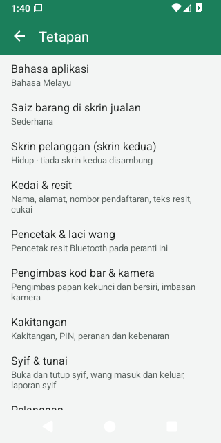
| Tetapan | Fungsinya | Berkuat kuasa untuk |
|---|---|---|
| Bahasa aplikasi | Bahasa telefon, English atau Bahasa Melayu untuk skrin aplikasi. Resit mempunyai bahasanya sendiri. | telefon ini |
| Saiz barang di skrin jualan | Petak barang Besar (kurang barang), Sederhana (lalai) atau Kecil (lebih banyak barang). | kaunter ini |
| Skrin pelanggan (skrin kedua) | Menunjukkan bil kepada pelanggan pada paparan kedua — butiran. Hidup secara lalai. | kaunter ini |
| Kedai & resit | Butiran kedai, resit, cukai, pembundaran, syif, pelanggan, label penimbang — di bawah. | kedai |
| Pencetak & laci wang | Pencetak resit dan laci — di bawah. | kaunter ini |
| Pengimbas kod bar & kamera | Uji pengimbas, pengimbas bersiri, imbasan kamera — di bawah. | kaunter ini |
| Kakitangan | Kakitangan, PIN, peranan, bila kaunter dikunci — bab 10. | kedai (kunci: kaunter ini) |
| Syif & tunai | Bab 11. | kaunter ini |
| Pelanggan | Bab 12. | kedai |
| Kadar cukai | Kadar cukai. | kedai |
| Kaedah bayaran | Kaedah bayaran. | kedai |
| Kategori | Kategori. | kedai |
| Log aktiviti | Bab 14. | kedai |
| Sandaran Google Drive | Sandaran Google Drive. | kaunter ini |
| Sandaran | Sandaran, salinan ke folder, fail, pemulihan. | kaunter ini |
| Laporan jualan harian ke Google Drive | Laporan jualan harian. | kaunter ini |
| Laporan ralat | Laporan ralat. | telefon ini |
| Kemas kini aplikasi | Kemas kini aplikasi. | telefon ini |
| Diagnostik | Diagnostik. | telefon ini |
| Perihal | Versi, lesen, laman web dan dasar privasi. | — |
Kedai & resit
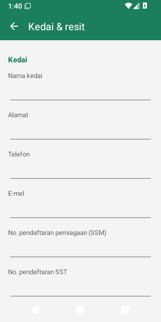
- Kedai
- Nama kedai (juga tajuk skrin jualan), Alamat, Telefon, E-mel, No. pendaftaran perniagaan (SSM), No. pendaftaran SST, No. pengenalan cukai (TIN). Ruangan yang kosong tidak dicetak pada resit.
- Resit
- Teks kepala resit dan Teks kaki resit (kaki kosong = “Terima kasih!”);
Bahasa resit (English atau Bahasa Melayu); Salinan resit (1–3, untuk resit automatik selepas
jualan); Cetak logo dengan Pilih gambar logo / Buang logo — gambar logo disimpan pada
telefon tempat ia dipilih, jadi pilih gambar itu pada setiap kaunter; Cetak kod QR permintaan e-invois bersama Pautan
QR — dalam pautan itu,
{receipt},{total}dan{date}diisi untuk setiap jualan. - Cukai dan pembundaran
- Harga termasuk cukai (hidup secara lalai) dan Bundarkan bayaran tunai kepada 5 sen (hidup secara lalai).
- Syif dan pelanggan
- Wajibkan syif dibuka untuk menerima bayaran, Kira laci apabila juruwang bertukar, Pelanggan dan kredit (bayar kemudian).
- Label penimbang
- Format label — butiran.
Ketik Simpan. Perubahan direkodkan dalam Log aktiviti. Mata wang ialah ringgit Malaysia (RM).
Pencetak & laci wang
Baris paling atas menunjukkan Status pencetak (sedia, disambung, mencetak, luar talian…) bersama butang Cuba semula apabila pencetak luar talian.
| Tetapan | Pilihan (lalai disenaraikan dahulu) |
|---|---|
| Pilih pencetak yang telah dipasangkan / Pasangkan pencetak baru (tetapan Bluetooth) | Pencetak Bluetooth yang telah dipasangkan dalam Android. |
| Lebar kertas | 58 mm (32 aksara); 80 mm (48 aksara); 80 mm (42 aksara). |
| Cetak sebagai | Automatik (teks; gambar jika perlu); Teks (paling pantas); Gambar (sebarang bahasa). Automatik mencetak gambar hanya apabila resit mengandungi huruf yang tidak dapat dicetak oleh pencetak (Cina, Tamil, €…). |
| Pencetak ada aksara Cina (GB18030) | Mati. Hidupkan untuk pencetak Cina supaya tulisan Cina dicetak sebagai teks. |
| Nombor halaman kod | 0 (biasanya betul). |
| Potong kertas | Hidup. |
| Baris kosong selepas resit | 4. |
| Cetak resit selepas setiap jualan | Hidup. Jika dimatikan: ketik Cetak resit selepas jualan apabila pelanggan mahukan resit. |
| Pencetak melukis kod QR sendiri | Mati. |
| Laci wang disambung ke pencetak | Hidup. |
| Pin laci | Pin 2 (kebanyakan laci); Pin 5. |
Butang: Simpan, Cetak halaman ujian, Buka laci, dan Kosongkan baris gilir cetakan semasa ada resit yang menunggu.
Pengimbas kod bar & kamera
- Pengimbas mod papan kekunci (USB, atau Bluetooth HID) tidak perlu ditetapkan: sambungkan atau pasangkan, kemudian terus imbas.
- Uji pengimbas: ketik ruangan itu dan imbas; ia menunjukkan dengan tepat apa yang dihantar oleh pengimbas.
- Pengimbas Bluetooth bersiri (SPP): Pilih pengimbas yang telah dipasangkan untuk pengimbas dalam mod bersiri, kemudian ketik Simpan. Berhenti guna pengimbas bersiri dan Simpan melupakannya.
- Imbas kod bar dengan kamera: hidup secara lalai; jika dimatikan, butang kamera di skrin jualan disembunyikan.
18. Perkakasan
| Perkakasan | Yang boleh digunakan |
|---|---|
| Telefon atau tablet | Android 5.0 atau lebih baharu, dari telefon 5 inci hingga tablet 10 inci, menegak atau melintang. |
| Pencetak resit | Pencetak terma Bluetooth yang menggunakan arahan ESC/POS (kebanyakan pencetak murah 58 mm dan 80 mm), dipasangkan dalam tetapan Bluetooth Android. Pencetak USB, Wi-Fi/LAN dan pencetak Bluetooth LE sahaja tidak disokong. |
| Laci wang | Laci yang disambung ke port laci pencetak (pin 2 atau pin 5). |
| Pengimbas kod bar | Pengimbas USB atau Bluetooth dalam mod papan kekunci (HID) — tidak perlu ditetapkan; atau pengimbas Bluetooth bersiri (SPP) yang dipilih dalam Tetapan. Sebaik-baiknya ditetapkan untuk menghantar Enter selepas setiap kod. |
| Kamera | Kamera belakang telefon membaca kod EAN-13, EAN-8, UPC-A, UPC-E, Code 128, Code 39 dan kod QR. |
| Penimbang | Tanpa sambungan kabel: penimbang yang mencetak label mencetak kod bar dengan berat atau harga (cara menyediakan). |
| Skrin pelanggan | TV atau monitor sebagai paparan kedua: HDMI, USB-C, atau Miracast (“Screen mirroring”, “Smart View”, “Wireless display”). |
| Storan sandaran | Kad SD atau pemacu USB OTG untuk salinan harian ke folder. |
Petua pengimbas kod bar
- Pasangkan pengimbas Bluetooth dalam tetapan Bluetooth Android. Kebanyakan pengimbas datang dalam mod papan kekunci: ia terus berfungsi di skrin jualan.
- Semasa pengimbas mod papan kekunci disambung, Android mungkin menyembunyikan papan kekunci pada skrin. Aplikasi kemudian memaparkan Tiada papan kekunci? → Tetapan papan kekunci: hidupkan Gunakan papan kekunci pada skrin (atau Tunjukkan papan kekunci maya).
- Pengimbasan berfungsi di skrin jualan, semak harga, senarai produk dan borang produk (untuk menambah kod bar), Terima stok, kiraan stok, dan setiap kali anda memilih produk (Laras stok, produk sesuatu promosi).
- Menyambung atau memutuskan sambungan pengimbas tidak pernah menetapkan semula skrin atau bil.
Skrin pelanggan pada paparan kedua

- Sambungkan TV atau monitor dengan kabel HDMI atau USB-C, atau hantar paparan ke skrin itu dengan Screen mirroring / Smart View / Wireless display (leret ke bawah dari bahagian atas tablet, atau Tetapan → Skrin pelanggan → Sambung skrin).
- Semasa LekasPOS dibuka, skrin kedua memaparkan Selamat datang bersama nama kedai, manakala tablet kekal sebagai skrin juruwang.
- Semasa menjual, pelanggan melihat setiap baris, barang yang baru ditambah (besar, dengan gambarnya), sebarang diskaun bil, Jumlah (Jumlah perlu dibayar semasa pembayaran) dan, selepas membayar, Terima kasih!, Dibayar dan Baki mereka.
- Skrin pelanggan menggunakan bahasa resit. Semasa ia dihidupkan, pelanggan hanya melihat skrin pelanggan, tidak pernah bahagian pengurusan (laporan, kos).
- Cast screen Google Home atau Chromecast hanya menyalin skrin tablet dan tidak boleh memaparkan skrin pelanggan: gunakan Screen mirroring (Miracast) atau kabel.
- Matikannya bagi setiap kaunter di Tetapan → Skrin pelanggan (skrin kedua). Kemudian cabut juga kabelnya atau hentikan penghantaran paparan ke skrin kedua: jika tidak, Android menyalin skrin tablet itu sendiri ke sana, termasuk laporan dan kos.
19. Kemas kini aplikasi, laporan ralat dan diagnostik
Kemas kini aplikasi
- Sekali sehari, LekasPOS menyemak GitHub, tempat ia diterbitkan, untuk mencari versi baharu, dan memuat turunnya di latar belakang. Hanya permintaan itu yang dihantar — tiada apa-apa tentang kedai anda.
- Apabila versi baharu sudah sedia, pemilik (sesiapa yang dibenarkan mengubah tetapan) melihat Kemas kini 1.x.y di bahagian atas skrin jualan. Ketik untuk melihat Apa yang baharu, kemudian Kemas kini sekarang. Selesaikan atau tangguhkan bil dahulu.
- Kali pertama pada Android 8 dan yang lebih baharu, Android meminta anda membenarkan LekasPOS memasang aplikasi: ketik Teruskan dan hidupkan Benarkan daripada sumber ini, kemudian kembali. Android kemudian meminta anda mengesahkan kemas kini. LekasPOS ditutup semasa Android memasangnya; kemudian ketik Buka. Semua data kekal (sandaran dibuat dahulu jika kemas kini mengubah pangkalan data).
- Setiap muat turun diperiksa (saiz, cap jari dan tandatangan) sebelum ditawarkan.
- Tetapan → Kemas kini aplikasi menunjukkan versi, Semak setiap hari (hidup), Termasuk versi ujian (untuk penguji) (mati) dan Semak sekarang.
- Versi anda ditunjukkan dalam Tetapan → Perihal.
Laporan ralat
Sekali sahaja, aplikasi bertanya Bantu baiki masalah? Jika anda memilih Hantar laporan, apabila aplikasi berhenti, tersekat atau menunjukkan ralat, telefon menghantar laporan teknikal yang ringkas kepada pembangun LekasPOS: apa yang tidak kena, versi aplikasi, model telefon, versi Android dan memori. Laporan ini tidak sekali-kali mengandungi jualan, produk, harga, pelanggan, kakitangan, PIN atau akaun Google anda. Tukar jawapan anda bila-bila masa di Tetapan → Laporan ralat.
Diagnostik
Tetapan → Diagnostik (atau Urus kedai › Diagnostik) digunakan untuk menyelesaikan masalah:
- Kongsi log ralat — menghantar log ralat teknikal telefon (tiada data kedai) kepada orang yang membantu anda.
- Hantar laporan kepada pembangun — bersama apa yang berlaku dan, jika anda mahu dibalas, nombor telefon atau e-mel anda.
- Ujian pantas dan Ujian penuh — mengukur kelajuan telefon ini dengan data kedai yang besar. Ujian ini menggunakan pangkalan data ujian yang berasingan dan tidak pernah menyentuh data kedai anda; ketik Padam data ujian selepas itu. Ujian penuh memerlukan kira-kira 350 MB dan 5–20 minit, sambil telefon dicas.
20. Penyelesaian masalah dan soalan lazim
Menjual
- Pengimbas berbunyi tetapi tiada barang ditambah / “Kod bar tidak dijumpai”.
- Produk itu belum mempunyai kod bar tersebut. Tambahkannya dengan Tambah produk (juruwang perlu PIN pengurus), atau tambah kod bar itu pada produk sedia ada dalam Produk. Kod bar karton memerlukan Tambah kod bar pek.
- Pengimbas menaip ke dalam kotak carian, atau tiada apa-apa berlaku.
- Periksa pengimbas di Tetapan → Pengimbas kod bar & kamera → Uji pengimbas. Tetapkan pengimbas supaya menghantar Enter selepas setiap kod (lihat manualnya). Pengimbas bersiri (SPP) mesti dipilih di situ; pengimbas mod papan kekunci tidak perlu ditetapkan.
- Papan kekunci pada skrin hilang.
- Pengimbas mod papan kekunci sedang disambung. Hidupkan Gunakan papan kekunci pada skrin dalam tetapan papan kekunci Android (aplikasi menawarkan Tetapan papan kekunci).
- Saya tidak jumpa Diskaun atau Buka laci wang dalam Menu, atau Bayaran balik / Batalkan pada resit.
- Peranan anda tidak membenarkannya, jadi ia disembunyikan. Minta pengurus mengetik Menu → PIN pengurus dan menaip PIN mereka: butang itu muncul (bayaran balik, pembatalan dan laci meminta PIN pengurus sekali lagi). Atau pengurus log masuk melalui Kunci / tukar pengguna.
- Kaunter memaparkan “Semak tarikh dan masa”.
- Jam telefon salah (selalunya selepas bateri habis sepenuhnya). Jualan disimpan di bawah tarikh ia dibuat, jadi tetapkan tarikh dan masa yang betul dahulu — sebaik-baiknya dengan tarikh dan masa automatik dihidupkan.
- Kaunter memaparkan “Tiada syif dibuka”.
- Kedai mewajibkan syif: ketik Buka syif, kira laci, kemudian bayar. Untuk berhenti mewajibkan syif: Tetapan → Kedai & resit → matikan Wajibkan syif dibuka untuk menerima bayaran. Kaunter baharu yang menyertai kedai mungkin menghidupkannya semula: semak tetapan ini selepas menambah kaunter.
- “Jualan tidak disimpan”.
- Jualan itu tidak direkodkan dan bil masih disimpan. Baca sebabnya (selalunya storan telefon penuh), betulkan, dan ketik Bayar sekali lagi. Jika pelanggan sudah membayar dengan kad atau e-dompet di terminal anda, jangan caj mereka sekali lagi: ketik sahaja kaedah yang sama.
- Pelanggan dicaj dua kali / jualan percubaan.
- Pengurus membuka Menu → Jualan & bayaran balik → jualan itu → Batalkan. Pembatalan hanya membetulkan rekod: pulangkan sendiri wang pelanggan (tunai dari laci; kad atau e-dompet melalui terminal atau aplikasi bank anda).
- Aplikasi terlalu kerap dikunci / tidak pernah dikunci.
- Tetapan → Kakitangan → ⋮ → Bila kaunter dikunci (bagi setiap kaunter).
Pencetak dan laci
- “Tiada peranti dipasangkan” semasa memilih pencetak.
- Pasangkan pencetak dahulu dalam tetapan Bluetooth Android (PIN biasanya 0000 atau 1234), kemudian Pilih pencetak yang telah dipasangkan.
- “Pencetak luar talian” / “luar talian, tekan Cuba semula”.
- Adakah pencetak dihidupkan, dicas dan berdekatan? Adakah Bluetooth dihidupkan? Adakah ia disambung ke telefon lain? Ketik Cuba semula dalam tetapan pencetak. Pada Android 12 ke atas, benarkan Peranti berdekatan (Buka tetapan → Kebenaran).
- “tidak mencetak: semak kertas dan penutup”.
- Kertas habis, penutup terbuka atau pencetak terlalu panas. Betulkan masalah itu; pencetakan bersambung dengan sendirinya.
- Resit yang menunggu tidak pernah dicetak.
- Resit automatik yang menunggu lebih daripada 10 minit akan digugurkan. Cetak salinan dari Jualan & bayaran balik.
- Tanda soal atau huruf yang salah pada resit.
- Tetapkan Cetak sebagai kepada Automatik atau Gambar. Untuk pencetak Cina, hidupkan Pencetak ada aksara Cina. Kekalkan halaman kod pada 0.
- Baris terpotong atau berlipat ke baris baharu.
- Pilih Lebar kertas yang betul; untuk 80 mm, cuba kedua-dua 48 dan 42 aksara dengan Cetak halaman ujian.
- Laci wang tidak terbuka.
- Pastikan Laci wang disambung ke pencetak dihidupkan, cuba Pin 5, dan pastikan kaedah bayaran itu mempunyai Membuka laci wang yang ditanda. Pencetak mesti disambung.
Sandaran dan Google Drive
- “Tiada sandaran” tidak hilang-hilang.
- Hidupkan Sandaran Google Drive atau salinan harian ke folder — atau simpan/kongsi fail sandaran. Jika Sandaran Google Drive sudah hidup, buka skrinnya: status menyatakan apa yang tidak kena (tiada internet, perlu log masuk, Drive penuh).
- “Sandaran: log masuk”.
- Tetapan → Sandaran Google Drive → Log masuk semula dengan akaun Google yang sama.
- “Sandaran Google Drive memerlukan perkhidmatan Google Play”.
- Telefon ini tiada perkhidmatan Google Play: gunakan salinan harian ke kad SD atau pemacu USB.
- “Google Drive kedai ini sudah penuh”.
- Kosongkan ruang dalam Google Drive itu atau beli storan tambahan; sandaran bersambung dengan sendirinya.
- “Tarikh atau masa telefon ini salah”.
- Hidupkan tarikh dan masa automatik dalam tetapan Android.
- Google Drive tiada dalam senarai folder.
- Gunakan Kongsi fail sandaran → Simpan ke Drive sebagai ganti, atau Sandaran Google Drive.
- “Ini bukan fail sandaran LekasPOS” / “rosak atau tidak lengkap”.
- Pilih fail
.lekasbak; cuba salinan lain jika fail itu terputus semasa disalin. - Perubahan di satu kaunter tidak muncul di kaunter lain.
- Kedua-dua kaunter perlu menghidupkan Sandaran Google Drive dengan akaun Google yang sama dan ada internet. Ketik Segerak sekarang pada kedua-duanya. Kaunter dalam kedai ini menunjukkan bila setiap kaunter kali terakhir bersegerak.
Soalan lain
- Adakah data saya dihantar kepada pembangun?
- Tidak. Data kedai kekal dalam telefon dan, jika anda menghidupkan Sandaran Google Drive atau laporan jualan harian, dalam Google Drive anda sendiri. Laporan ralat (hanya jika anda membenarkannya) mengandungi butiran teknikal sahaja. Lihat dasar privasi.
- Adakah saya perlukan internet?
- Tidak untuk menjual. Internet hanya diperlukan untuk Sandaran Google Drive, laporan jualan harian, kemas kini dan laporan ralat (jika anda membenarkannya).
- Adakah ia berbayar?
- Tidak. LekasPOS percuma dan bersumber terbuka (GPL-3.0).
- Bolehkah saya menggunakannya untuk e-invois (LHDN)?
- LekasPOS tidak menghantar e-invois kepada LHDN dengan sendirinya. Resit boleh mencetak kod QR ke halaman permintaan e-invois anda sendiri (tetapkan pautannya dalam Kedai & resit), dan eksport Resit – untuk e-invois bulanan menyenaraikan setiap resit supaya anda atau akauntan anda boleh menghantar e-invois disatukan bulanan (tinggalkan jualan yang dibatalkan).
- Pemilik lupa PIN dan kehilangan kod pemulihan.
- Orang lain yang mempunyai peranan Pemilik boleh menetapkan PIN baharu untuknya (Tetapan → Kakitangan). Tanpa pemilik lain, tiada cara untuk masuk semula — sila minta bantuan sebelum mengosongkan data atau memasang semula aplikasi, kerana ini memadam data dalam telefon itu. Simpan kod pemulihan di tempat selamat, dan pertimbangkan untuk memberi peranan Pemilik kepada orang kedua yang dipercayai.
- Bagaimana saya berpindah ke telefon baharu?
- Mula-mula, selesaikan jualan pada telefon lama. Dengan Sandaran Google Drive, tunggu sehingga skrin Sandaran Google Drive pada telefon lama menyatakan Semua sudah disandarkan, kemudian sediakan telefon baharu seperti dalam Telefon hilang atau rosak. Tanpanya, simpan fail sandaran pada telefon lama selepas jualan terakhir dan pulihkannya pada telefon baharu dengan Ganti telefon lama. Jangan menjual pada telefon lama selepas itu.
21. Istilah dalam aplikasi
| Bahasa Melayu | English | Maksud |
|---|---|---|
| Kaunter | Till | Satu telefon atau tablet yang digunakan untuk menjual. |
| Bil | Bill | Barang-barang pelanggan yang sedang dilayan. |
| Tangguh / bil ditangguh | Hold / held bill | Bil yang diketepikan untuk melayan pelanggan lain. |
| Kosongkan bil | Clear bill | Membuang bil yang ada di skrin. |
| Baki | Change | Wang yang dipulangkan kepada pelanggan. |
| Pecah bayaran | Split payment | Bil yang dibayar dengan lebih daripada satu kaedah. |
| Pembundaran | Rounding | Tunai dibundarkan kepada 5 sen yang terdekat. |
| Salinan resit | Receipt copy | Sebarang cetakan resit selepas cetakan pertama. |
| Bayaran balik / pulangan | Refund / return | Wang yang dibayar balik untuk barang yang dipulangkan. |
| Batalkan | Void | Membatalkan seluruh jualan seolah-olah ia tidak pernah berlaku. |
| Semak harga | Price check | Melihat harga tanpa menjual. |
| Laris | Popular | Barang paling laris dalam 30 hari terakhir. |
| Promosi | Promotion | Tawaran yang dikenakan oleh kaunter secara automatik. |
| Syif | Shift | Masa seseorang di satu kaunter, dari kiraan ke kiraan. |
| Wang apungan | Float | Wang kecil dalam laci pada permulaan syif. |
| Simpanan wang | Cash drop | Wang tunai yang dibawa dari laci ke peti besi atau bank. |
| Tunai dijangka / lebih / kurang | Expected cash / over / short | Jumlah yang sepatutnya ada dalam laci, dan perbezaannya. |
| Kredit pelanggan | Customer credit | Bayar kemudian; pelanggan berhutang kepada kedai. |
| Pemilik / Pengurus / Juruwang | Owner / Manager / Cashier | Peranan yang sedia ada dalam aplikasi. |
| Kelulusan pengurus | Manager approval | PIN pengurus untuk sesuatu yang juruwang tidak dibenarkan lakukan. |
| Kod pemulihan | Recovery code | Cara pemilik masuk semula selepas terlupa PIN. |
| Log aktiviti | Activity log | Rekod tindakan sensitif. |
| Terima stok / penghantaran | Receive stock / delivery | Barang yang tiba daripada pembekal. |
| Laras stok / dihapus kira | Adjust stock / written off | Stok yang diubah secara manual (rosak, tamat tempoh…). |
| Kiraan stok | Stock count | Mengira barang yang ada di rak. |
| Harga kos | Cost price | Kos satu unit atau satu kg kepada anda. |
| Untung kasar | Gross profit | Jualan bersih tolak kos barang yang dijual. |
| Sandaran Google Drive / segerak | Google Drive backup / sync | Menyalin data kedai ke Google Drive dan antara kaunter. |
| Sandaran | Backup & restore | Salinan data, dan memulihkan salah satu daripadanya. |
22. Privasi dan mendapatkan bantuan
- Privasi: data kedai anda kekal dalam telefon anda dan, hanya jika anda menghidupkan Sandaran Google Drive atau laporan jualan harian, dalam Google Drive anda sendiri. Pembangun tidak pernah menerimanya. Baca dasar privasi.
- Masalah atau cadangan: laporkan di GitHub, atau hantar laporan dari aplikasi (Tetapan → Diagnostik → Hantar laporan kepada pembangun, bersama nombor telefon atau e-mel anda jika mahu dibalas).
- Kod sumber: github.com/FaizoKen/LekasPOS (GPL-3.0).
- Muat turun dan pasang: laman utama LekasPOS.